As variáveis quantitativas são aquelas que representam valores numéricos contínuos ou discretos, podendo ser medidos ou contados. Exemplos incluem contagens em geral, altura, peso, idade, renda ou temperatura de um conjunto de observações. Em estatística, esse tipo de variável é essencial para calcular médias, desvios, variâncias e para realizar análises de correlação, regressão e distribuição.
Neste capítulo, vamos explorar formas gráficas e resumidas de representação adequadas para variáveis quantitativas. Veremos os seguintes gráficos neste capítulo:
Gráfico Histograma
Gráfico de Densidade
Gráfico Boxplot
Gráfico Boxplot + Gráfico Violino
Gráfico de Dispersão
Gráfico de Dispersão + Distribuição Marginal
Gráfico Correlograma
Gráfico Bolha
Gráfico Quantil Quantil (Q-Q Plot)
Gráfico de Série Temporal
Gráfico Temporal com dois Eixos
Para este capítulo, serão necessários os seguintes pacotes:
Código
library(openxlsx) # Leitura de bases de dados library(ggplot2) # Gráficoslibrary(patchwork) # Organiza múltiplos gráficoslibrary(ggpubr) # Correlação no gráfico.library(ggExtra) # Gráfico de dispersão + marginaislibrary(corrplot) # Gráfico Correlogramalibrary(qqplotr) # Gráfico qqplot
8.2SITUAÇÃO PRÁTICA MOTIVADORA I
A base de dados contém informações físico-químicas de diversas amostras de vinho branco, com 150 registros coletados. Cada linha representa um vinho diferente, enquanto cada coluna corresponde a uma característica quantitativa que descreve sua composição.
A seguir, apresentamos as 12 variáveis coletadas, a unidade de medida de cada uma e sua descrição/importância no universo dos vinhos:
Variável
Unidade
Descrição / Importância
qualidade
0-10
Avaliação feita por provadores, indica a qualidade percebida do vinho.
acidez_fixa
g/dm³
Representa os ácidos não voláteis do vinho. Contribui para o sabor e a preservação do vinho.
acidez_volatil
g/dm³
Medida de ácidos voláteis, como ácido acético. Valores altos podem indicar defeito ou oxidação.
acido_citrico
g/dm³
Presente naturalmente, contribui para frescor, equilíbrio e estabilidade do vinho.
acucar_residual
g/dm³
Açúcar que permanece após a fermentação. Afeta a doçura e a sensação na boca.
cloretos
g/dm³
Salinidade do vinho, em excesso pode prejudicar o sabor.
dioxido_enxofre_livre
mg/dm³
SO₂ livre, usado como conservante. Protege contra micro-organismos e oxidação.
dioxido_enxofre_total
mg/dm³
Soma do SO₂ livre e ligado. Indica a quantidade total de conservante presente.
densidade
g/cm³
Relacionada ao teor de açúcar e álcool; ajuda a estimar características sensoriais.
ph
escala
Mede a acidez total. Influencia sabor, estabilidade e capacidade de conservação.
sulfatos
g/dm³
Compostos que contribuem para aroma, estabilidade e prevenção de oxidação.
teor_alcoolico
%
Determina o corpo e a sensação do vinho na boca.
Os objetivos desta análise são:
Compreender as propriedades físico-químicas dos vinhos brancos, descrevendo suas principais características e particularidades.
Explorar a variabilidade entre as amostras, identificando padrões, similaridades e possíveis discrepâncias nos dados.
Investigar relações entre atributos físico-químicos, verificando quais deles se associam mais fortemente à percepção de qualidade.
Fornecer uma visão geral interpretável, que auxilie na previsão da qualidade percebida pelos provadores e gere subsídios práticos para enólogos e pesquisadores.
Essa base é ideal para aplicações de análise exploratória, visualização de dados e modelagem preditiva, permitindo estudar distribuições, correlações e padrões entre as variáveis.
A base de dados está armazenada no arquivoDadosVinho.xlsx. Os comandos a seguir fazem a leitura dessa base de dados:
Código
Dados =read.xlsx("DadosVinho.xlsx")
8.3GRÁFICO HISTOGRAMA
O histograma é um dos gráficos mais importantes para a análise de variáveis quantitativas, pois permite visualizar de forma intuitiva como os dados estão distribuídos. Ele organiza os valores em intervalos consecutivos, chamados de classes ou bins, e representa a frequência ou densidade de observações em cada intervalo por meio de barras verticais contíguas.
As características de um histograma são:
Altura das barras: Cada barra indica a quantidade de observações que caem dentro de um determinado intervalo. Barras mais altas representam intervalos com maior concentração de valores, enquanto barras mais baixas indicam intervalos com poucas observações. A altura das barras pode ser expressa como frequência absoluta, frequência relativa ou densidade, dependendo do objetivo da análise.
Largura das barras: A escolha da largura das barras é crucial para a interpretação do gráfico. Barras muito largas podem mascarar padrões importantes, tornando a distribuição aparentemente mais homogênea do que realmente é. Por outro lado, barras muito estreitas podem resultar em um histograma irregular e ruidoso, dificultando a identificação de tendências gerais.
Equidistância das barras: Em um histograma tradicional, as barras possuem mesma largura, garantindo que apenas a altura das barras varie para representar diferenças nas frequências. Essa uniformidade é essencial para que a interpretação da distribuição seja precisa.
Forma da distribuição: O histograma revela padrões importantes nos dados, como simetria, assimetria, picos (modos), vales e até outliers. Por exemplo, uma distribuição com uma única barra mais alta no centro tende a indicar dados concentrados em torno da média, enquanto múltiplos picos podem indicar que os dados vêm de subgrupos diferentes.
Número de classes: O número de intervalos escolhidos afeta diretamente a percepção da distribuição. Um número insuficiente de classes pode ocultar variabilidade, enquanto um número excessivo pode gerar flutuações artificiais.
Veja, por exemplo, o efeito do número de classes nos seguintes histogramas:
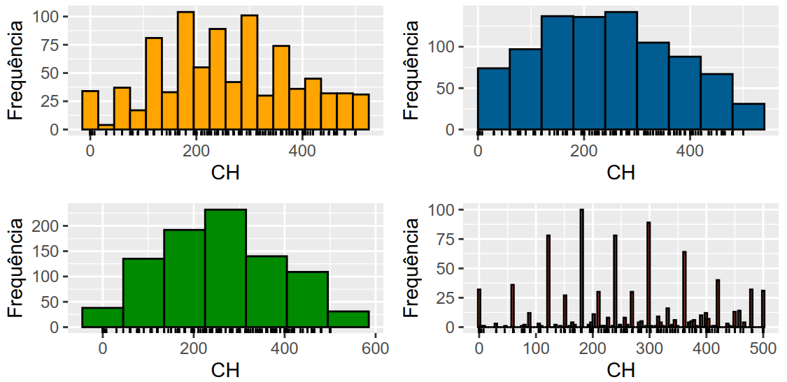
O histograma não só fornece uma visão geral da distribuição dos dados, mas também é uma etapa fundamental antes da aplicação de técnicas estatísticas mais avançadas, como teste de normalidade, análise de dispersão ou modelagem estatística. Ele ajuda o analista a decidir se transformações nos dados são necessárias, se existem valores extremos que merecem atenção ou se a distribuição segue um padrão esperado.
Em resumo, o histograma é uma ferramenta simples, mas poderosa, que combina estética visual com informação quantitativa, sendo essencial para qualquer análise de variáveis numéricas.
Para construir um histograma no R com o ggplot2, utilizaremos a função geométricageom_histogram(). Como temos somente uma variável para ser associada à geometria, o comando inicial sempre será:
ggplot(Dados,aes(x=variavelX))+geom_histogram()
Para acessar todos os dados do histograma construído (intervalos, por exemplo), basta guardar seu histograma em um objeto (Histograma, por exemplo) e utilizar o seguinte comando:
ggplot_build(Histograma)$data[[1]]
Vamos dividir este tópico abordando três diferentes formas de definir a altura da barra:
Frequência absoluta
Frequência relativa
Densidade
Em todos os exemplos, será trabalhado o histograma para a variávelteor_alcoolico.
8.3.1FREQUÊNCIA ABSOLUTA
A frequência absoluta é a forma mais direta de definir a altura das barras de um histograma. Ela indica o número total de observações que caem em cada intervalo da variável.
No caso da variável teor_alcoolico, cada barra do histograma mostrará quantos vinhos da amostra possuem teor alcoólico dentro de um determinado intervalo.
Características importantes:
Barras mais altas indicam intervalos com maior frequência de observações.
Barras mais baixas indicam intervalos com menor frequência.
A soma das alturas das barras corresponde ao total de observações da amostra.
A frequência absoluta é o padrão da geometriageom_histogram(). Vamos então ao nosso primeiro histograma:
O comando scale_x_continuous(labels = function(x) paste0(x, "%")) coloca o eixo x em porcentagem (sem multiplicar por 100)
Nota-se que a distribuição dos dados é assimétrica à direita, com maior concentração em menores valores do teor alcoólico.
Ao usar geom_histogram(), o pacote cria automaticamente 30 barras (bins) por padrão, dividindo os dados em 30 intervalos de igual largura.
Em uma situação como a nossa (n=150), 30 barras pode deixar o gráfico muito ruidoso e não fornecer uma boa síntese como observado acima. Assim, antes de trazer cores e/ou mais informações para o gráfico, vamos discutir sobre a largura da barra.
8.3.1.1LARGURA DA BARRA
A largura da barra de um histograma pode ser definida de diferentes maneiras:
Amplitude fixa dos intervalos: o pesquisador define diretamente a largura de cada classe (ex.: largura = 5).
Número de barras: especifica-se quantas barras o histograma deve ter, e a largura é calculada automaticamente a partir da amplitude dos dados.
Intervalos determinísticos: criados manualmente de acordo com a conveniência do estudo (ex.: faixas etárias 0–10, 10–20, 20–30 etc.).
Regras ótimas: critérios estatísticos, Freedman–Diaconis ou Scott, que determinam a largura adequada com base no tamanho da amostra e na variabilidade dos dados.
8.3.1.1.1AMPLITUDE FIXA:
Para a amplitude fixa, utlizaremos o argumentobinwidth, dentro do geom_histogram(). Por exemplo, para garantir barras com amplitude de 0.5%, utilizaremos o seguinte código:
Se você tem os pontos de corte específicos para seu problema (equidistantes ou não), você mesmo os define no argumento breaks da função geom_histogram(). Por exemplo, se queremos exatamente os intervalos [8,9), [9,10), [10,11), [11,12), [12,13),[13,14], utilizaremos o seguinte breaks:
Assim, conseguimos fazer gráficos histograma que não possuembarras equidistantes.
8.3.1.1.4REGRAS ÓTIMAS
Quando não há o conhecimento prévio de quantas barras são necessárias ou qual a amplitude prévia de cada barra, podemos deixar que os dados mesmos definem a nossa escolha a partir de duas regras ótimas:
FREEDMAN-DIACONIS
Fórmula da largura da barra (binwidth):
\[
h = 2 \times \frac{\textrm{IQR}}{n^{1/3}}
\]
onde \(\textrm{IQR}\) é o intervalo interquartil (Q3 – Q1) e \(n\) é o número de observações.
Vantagens:
Ajusta a largura das barras de acordo com a dispersão real dos dados.
Robusta a outliers, pois usa o IQR em vez do desvio padrão.
Usabilidade:
Ideal para distribuições assimétricas ou quando existem outliers que poderiam distorcer a largura das barras.
SCOTT
Fórmula da largura da barra (binwidth): \[h = 3.5 \times \frac{\sigma}{n^{1/3}}\]
onde \(\sigma\) é o desvio padrão da amostra e \(n\) é o número de observações.
Vantagens:
Fácil de calcular e funciona bem para distribuições aproximadamente normais (simétricas).
Ajusta a largura das barras à dispersão dos dados.
Usabilidade:
Boa escolha quando os dados são simétricos e sem valores extremos significativos.
Para obter o número de bins com base nas amplitudes das barras calculadas por cada uma dessas regras podemos usar, respectivamente, as funçõesnclass.FD() e nclass.scott(). Essas funções devem ser aplicadas nos dados da variável de interesse.
O pacote patchwork() permite colocar facilmente gráficos em um grid lado a lado apenas somando os objetos que armazenam seus gráficos. É possível montar grids complexos com outros operadores também.
Como os nossos dados são assimétricos, optaremos pela escolha a partir da regra ótima de Freedman-Diaconis.
Por fim, vamos adicionar cores ao nosso gráfico final. Para isso, usamos os argumentosfill (cor interna do histograma) e color (cor da borda das barras), dentro da função geom_histogram(). Além disso, podemos adicionar rótulos em cima das barras para detalhar as contagems com a geometriageom_text(), já vista anteriormente.
É importante no geom_stat definir que a contagem será feita de acordo com os bins.
Para seguir com os próximos conteúdos, vamos adaptar este gráfico final.
8.3.2FREQUÊNCIA RELATIVA
A frequência relativa indica a proporção ou percentual de observações que caem em cada intervalo da variável. Ela é obtida dividindo-se a frequência absoluta de cada intervalo pelo total de observações da amostra.
No caso da variável teor_alcoolico, cada barra do histograma mostrará a fração de vinhos da amostra com teor alcoólico dentro de um determinado intervalo, em vez do número absoluto.
Características importantes:
Barras mais altas indicam intervalos com maior proporção de observações.
Barras mais baixas indicam intervalos com menor proporção de observações.
A soma de todas as alturas das barras é igual a 1 (ou 100% se for em percentual).
Similarmente ao que fizemos no gráfico de barras, para forçar o eixo a utilizar a frequência relativa, usamos o mapeamento aes(y = after_stat(count / sum(count))) dentro do geom_histogram(). O geom_text também é adaptado assim como fizemos antes.
A densidade indica como as observações da variável se distribuem ao longo de seus valores possíveis, ajustando as alturas das barras de forma que a área total sob o histograma seja igual a 1.
No caso da variável teor_alcoolico, cada barra do histograma mostrará a contribuição relativa de vinhos com teor alcoólico dentro de um determinado intervalo, considerando a largura do intervalo. Assim, barras mais largas não “inflam” a contagem, pois o cálculo da densidade compensa essa diferença.
Características importantes:
Barras mais altas indicam intervalos com maior concentração de observações por unidade de medida.
Barras mais baixas indicam intervalos com menor concentração de observações por unidade de medida.
A área total do histograma é igual a 1.
Diferentemente da frequência relativa, aqui não se soma a altura das barras, mas sim a área das barras.
O histograma de densidade pode ser visto como uma aproximação empírica de uma distribuição de probabilidade contínua.
Nas distribuições contínuas, não falamos em “probabilidade de um valor específico”, mas sim na probabilidade de cair em um intervalo.
Essa probabilidade é dada pela área sob a curva da função densidade de probabilidade (f.d.p.).
Assim como no histograma de densidade, a área total sob a curva de uma distribuição contínua é sempre 1.
👉 Portanto, o histograma de densidade é um elo entre os dados observados e os modelos teóricos (como Normal, Exponencial, Uniforme etc.), servindo como ponto de partida para comparar a distribuição empírica com distribuições de probabilidade conhecidas.
Para fazer um gráfico histograma com a densidade, usamos o mapeamento aes(y = after_stat(density)) dentro do geom_histogram(). O geom_text também é adaptado assim como fizemos antes.
O gráfico de densidade é uma alternativa ao histograma para representar a distribuição de uma variável quantitativa. Enquanto o histograma organiza os dados em intervalos e mostra a frequência de observações em cada um deles, o gráfico de densidade constrói uma curva suave e contínua que acompanha o padrão da distribuição dos dados.
A ideia central é aplicar um processo chamado de suavização por kernel, que evita a rigidez dos intervalos fixos do histograma. Dessa forma, o gráfico de densidade revela tendências gerais de forma mais clara e intuitiva, principalmente quando se deseja destacar a forma da distribuição (se é simétrica, assimétrica, unimodal, bimodal, etc.).
As características principais desse gráfico são:
Curva contínua: A densidade mostra como os dados estão concentrados ao longo do eixo, sem depender da escolha arbitrária de larguras de classes, como ocorre no histograma.
Altura da curva: Pontos mais altos da curva indicam regiões com maior concentração de observações, enquanto áreas mais baixas indicam regiões menos prováveis.
Área total igual a 1: A curva é normalizada de forma que a área sob ela seja sempre igual a 1, permitindo interpretá-la como uma estimativa da função densidade de probabilidade de uma variável contínua.
Interpretação probabilística: A área sob a curva entre dois valores representa a probabilidade aproximada de a variável assumir valores nesse intervalo.
Assim, o gráfico de densidade é especialmente recomendado quando o objetivo é entender a forma global da distribuição, enquanto o histograma continua sendo útil para análises mais simples ou introdutórias.
8.4.1O SUAVIZADOR KERNEL
O gráfico de densidade produzido pela função geom_density() é baseado em uma técnica chamada estimativa de densidade por kernel. A ideia central é bastante simples: em vez de dividir os dados em intervalos, como no histograma, o método coloca uma curva suave em torno de cada observação.
Ao usar a função geom_density(), a curva desenhada em cada ponto do eixo (x) não depende de apenas um único dado, mas sim da contribuição de todos os pontos da amostra. Cada observação “empresta” um pouco de si para calcular a altura da curva a partir do kernel Gaussiano (default da função). Essa contribuição varia conforme a distância do ponto de interesse (x_0):
Vizinhos próximos de (x_0) têm uma contribuição grande, pois estão perto do ponto.
Vizinhos distantes têm contribuição pequena, já que está mais distante.
O parâmetro de suavização (h) (bandwidth) controla até que ponto os vizinhos contam:
Se (h) é pequeno, apenas os vizinhos muito próximos influenciam, deixando a curva cheia de oscilações.
Se (h) é grande, até vizinhos mais distantes entram no cálculo, gerando uma curva mais suave.
Assim, a curva de densidade kernel pode ser vista como o resultado da soma ponderada das contribuições de todos os vizinhos em cada ponto do eixo (x).
Uma regra prática bastante usada para escolher (h) é a regra de Silverman, que define o valor automaticamente a partir do tamanho da amostra, do desvio-padrão e do intervalo interquartílico dos dados. Esse critério funciona bem na maioria das situações e é o adotado por padrão em geom_density(). A Regra de Silverman é dada por:
\[
h = 0.9 \cdot \min\left(\hat\sigma, \frac{\textrm{IQR}}{1.34}\right) \cdot n^{-1/5}
\]
onde:
(n) = tamanho da amostra;
() = desvio-padrão amostral;
() = intervalo interquartílico (Q3 - Q1).
No R, o valor correspondente pode ser obtido pela função bw.nrd0():
Código
bw.nrd0(Dados$ph)
[1] 0.04438048
Outra alternativa para a escolha do bandwidth é o método de Sheather-Jones. Diferentemente da regra de Silverman, que utiliza uma fórmula direta baseada em medidas de dispersão, o método de Sheather-Jones utiliza os próprios dados para estimar o grau de suavização mais adequado.
De forma simplificada, o método considera características da forma e da curvatura da distribuição para determinar automaticamente o valor de (h). Por ser mais adaptativo, pode ser particularmente útil para distribuições assimétricas, multimodais ou com estruturas mais complexas.
No R, o bandwidth pelo método de Sheather-Jones pode ser obtido por:
Código
bw.SJ(Dados$ph)
[1] 0.05742385
Como temos somente uma variável para ser associada à geometria, o comando inicial sempre será:
ggplot(Dados,aes(x=variavelX))+geom_density()
Vamos então fazer um gráfico densidade para a variável ph com a função geométrica geom_density():
Nota-se que essa variável possu um comportamento aproximadamente simétrico, com maior concentração de valores próximo de 3,25. Lembrando que a escala de PH vai de 0 a 14. Numeros menores que 7 indicam maior acidez.
A função geom_density() possui vários argumentos úteis, a saber:
fill → define a cor de preenchimento da área sob a curva.
color / colour → define a cor da linha da curva.
alpha → controla a transparência do preenchimento (De 0 = totalmente transparente até 1 = totalmente opaco).
linewidth → ajusta a espessura da linha.
bw → controla a largura h, que limita a contribuição da vizinhança em cada ponto.
linetype → altera o tipo da linha. Coloque, entre aspas, um dos seguintes:
Experimente utilizar o argumento bw e alterar entre as regras de Silverman e Sheather-Jones.
8.5GRÁFICO BOXPLOT
O boxplot (ou diagrama de caixa) é um dos gráficos mais importantes para a análise de variáveis quantitativas, pois permite visualizar de forma clara a distribuição, a dispersão e a presença de valores extremos em um conjunto de dados. Ele resume a informação por meio de quantis e evidencia a mediana, o intervalo interquartílico (IQR) e os outliers de maneira intuitiva:
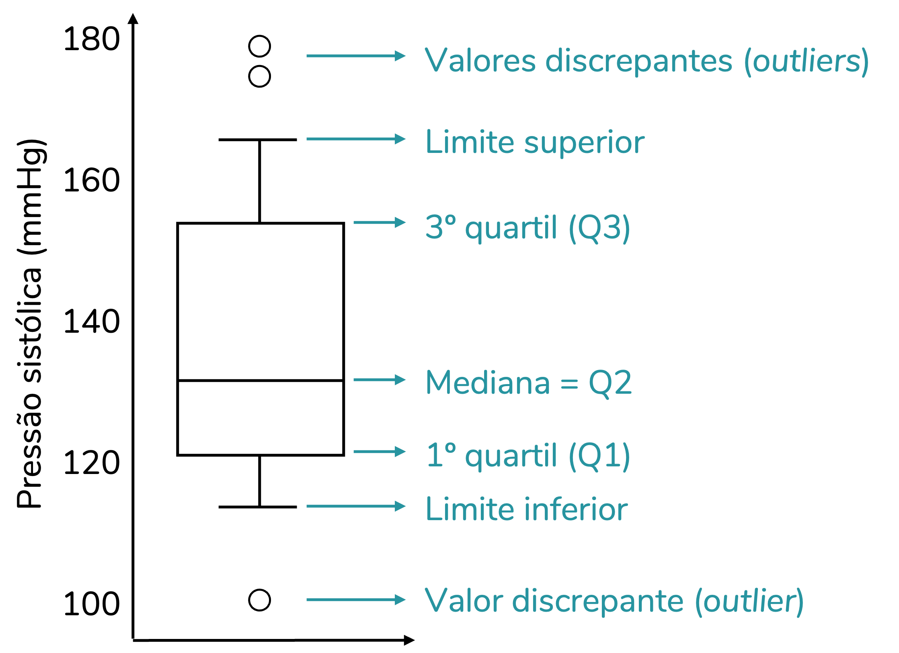
As características de um boxplot são:
Mediana: A linha dentro da caixa representa amediana dos dados, indicando o valor central que divide a amostra em duas metades. É uma medida robusta de tendência central, especialmente útil em distribuições assimétricas ou com outliers.
Caixa: A caixa se estende do primeiro quartil (Q1) ao terceiro quartil (Q3), representando o intervalo interquartílico (IQR), onde se concentra a maior parte dos dados (50%). A amplitude da caixa reflete na dispersão da metade central dos valores.
Bigodes: Linhas que se estendem da caixa até os valores mínimos e máximos não considerados outliers. Geralmente, os bigodes vão até 1,5 × IQR abaixo de Q1 ou acima de Q3, ajudando a identificar a amplitude típica dos dados.
Outliers: Pontos que ficam fora dos bigodes são considerados valores atípicos e são representados individualmente. Eles podem indicar erros de medição, observações raras ou subgrupos distintos na população.
Simetria e assimetria: A posição da mediana dentro da caixa e o comprimento dos bigodes fornecem indicações sobre a simetria da distribuição. Por exemplo, se a mediana estiver próxima de Q1 ou Q3, ou se um bigode for muito mais longo que o outro, isso sugere assimetria nos dados.
No R com o ggplot2, o gráfico boxplot é feito com a função geom_boxplot(). Como temos somente uma variável para ser associada à geometria, o comando inicial sempre será:
ggplot(Dados,aes(x=variavelX ou y=variavely))+geom_boxplot()
Desse modo, você pode fazer um gráfico com o boxplot na horizontal (eixo x) ou na vertical (eixo y). Para a variável acidez_fixa, tem-se o seguinte gráfico:
O gráfico boxplot apresenta 2 outliers para esta variável. Como o bigode à direita é maior que o bigode à esquerda, a distribuição parece ser assimétrica à direita (confirme com o gráfico densidade)
O comando expression() no xlab foi utilizado para retratar corretamente a unidade de medida da característica.
Algumas edições úteis podem incluir:
O mapeamento `y=" " permite que a gente consiga mexer na largura da caixa.
A camada theme(axis.text.y = element_blank(), axis.ticks.y = element_blank(),axis.title.y = element_blank())) remove os valores no eixo y.
O argumento width no geom_boxplot() diminui a largura da caixa.
Os argumentos fill e color no geom_boxplot() alteram, respectivamente, as cores internas e de borda do boxplot.
O gráfico violino pode ser adicionado ao boxplot, combinando a visualização tradicional de quartis, mediana e valores extremos com a estimativa da densidade da distribuição dos dados. Essa junção permite não apenas identificar medidas resumo, como o boxplot faz, mas também perceber a forma completa da distribuição, incluindo assimetrias, picos e regiões com maior concentração de valores.
Essa integração é especialmente útil quando queremos detectar padrões que um boxplot simples poderia ocultar. O gráfico violino torna a análise visual mais informativa e detalhada.
No R com o ggplot2, o gráfico violino é feito com a função geométrica geom_violin(). Essa função ajusta um geom_density() espelhado no gráfico. Como temos somente uma variável para ser associada à geometria, o comando inicial sempre será:
ggplot(Dados,aes(x=variavelX ou variavelY))+geom_violin()+geom_boxplot()
Para a variável acidez_fixa, que fizemos o gráfico boxplot há pouco, tem-se o seguinte gráfico boxplot + gráfico violino:
O gráfico de dispersão é uma ferramenta fundamental para a análise de relações entre duas variáveis quantitativas. Ele representa cada observação como um ponto no plano cartesiano, onde um eixo corresponde a uma variável e o outro eixo corresponde à segunda variável. Esse tipo de gráfico permite identificar padrões, tendências e associações entre as variáveis, sendo amplamente utilizado em estatística exploratória e em análises de correlação e regressão.
As características de um gráfico de dispersão são
Localização dos pontos: Cada ponto representa uma observação específica, com suas coordenadas correspondendo aos valores das duas variáveis analisadas. A posição dos pontos fornece informações visuais sobre como uma variável se comporta em função da outra.
Tendência geral: Ao observar o conjunto de pontos, é possível identificar tendências, como relação positiva, relação negativa ou ausência de relação aparente. Por exemplo, se os pontos sobem da esquerda para a direita, indica que, em geral, valores maiores de uma variável estão associados a valores maiores da outra.
Dispersão dos pontos: A densidade e o espalhamento dos pontos mostram o grau de variabilidade e a força da associação entre as variáveis. Pontos muito dispersos indicam relação fraca, enquanto pontos próximos de uma linha imaginária indicam relação forte.
Pontos fora do padrão (outliers): O gráfico facilita a identificação de valores atípicos, que podem influenciar a análise ou indicar erros de medição. Outliers aparecem como pontos isolados, distantes da tendência geral.
Formato da relação: Além de relações lineares, o gráfico de dispersão também permite identificar relações não lineares, como curvas ou padrões côncavos/convexos. Isso ajuda a decidir qual modelo estatístico ou transformação aplicar aos dados.
Complementos visuais: Linhas de tendência, cores ou tamanhos diferentes para grupos de pontos podem ser adicionados para destacar subgrupos, categorias ou padrões adicionais, enriquecendo a interpretação do gráfico.
O gráfico de dispersão não apenas oferece uma visão imediata da relação entre duas variáveis, mas também serve como etapa preliminar para análises mais complexas, como cálculo de correlação, regressão linear ou não linear, e detecção de padrões ou grupos nos dados.
No R, juntamente com o pacote ggplot2, podemos fazer o gráfico de dispersão com a função geométrica geom_point(). Agora, temos duas variáveis. Uma será alocada ao eixo x e a outra será alocada ao eixo y. Assim, o comando inicial sempre será:
Para começar nossas análises bivariadas, vamos considerar o gráfico de dispersão das variáveis teor_alcoólico(variável X) e densidade (variável Y). Tem-se, portanto, nosso primeiro gráfico de dispersão:
Claramente há uma tendência decrescente na nuvem de pontos. À medida que o teor alcoólico aumenta a densidade diminui. Uma relação entre as variáveis já seria esperado, uma vez que a densidade está relacionada ao teor de açúcar e álcool, ajudando a estimar características sensoriais.
A função geom_point permite os seguintes argumentos para modificar os pontos:
color : cor da borda do ponto.
fill : preenchimento do ponto.
size : tamanho do ponto.
alpha : transparência do ponto (De 0 = transparente até 1 = opaco).
shape : formato do ponto. Pode ser um dos seguintes:
Um gráfico de dispersão mostra como duas variáveis se relacionam. Muitas vezes, ao observar apenas os pontos, não fica claro qual é o padrão: será que a relação é linear, curva ou talvez nem exista um padrão aparente?
Para ajudar nessa tarefa, podemos adicionar linhas de tendência usando a função geom_smooth() do pacote ggplot2. Essa função constrói automaticamente uma curva que tenta resumir a relação entre as variáveis.
O comportamento do geom_smooth() depende da quantidade de pontos no gráfico:
Até 1.000 observações: o método padrão é o LOESS (Local Regression). Esse método ajusta pequenas regressões locais ao longo dos dados e as combina, resultando em uma curva suave que acompanha bem até relações não lineares.
Mais de 1.000 observações: por questões de desempenho, o método padrão passa a ser o GAM (Generalized Additive Models) com uma base spline. Esse método também gera curvas flexíveis, mas é mais eficiente em grandes conjuntos de dados.
Além da linha, o geom_smooth() desenha por padrão uma faixa de confiança de 95% em torno da tendência. Essa faixa indica a incerteza do ajuste da linha.
Então, se você não tem ideia da forma da relação entre as variáveis, o geom_smooth() no modo padrão é uma ótima escolha. Ele vai:
Detectar automaticamente curvas se elas existirem. > - Mostrar padrões sutis que não aparecem olhando apenas os pontos.
Oferecer uma noção de incerteza pela faixa de confiança.
É importante lembrar que o objetivo aqui é explorar e visualizar padrões, não substituir análises estatísticas formais.
Se quiser apenas a linha, sem a faixa de confiança, é possível remover a área sombreada.
Para conjuntos de dados muito grandes, considere métodos mais simples ou filtros para não sobrecarregar a visualização.
Use essa ferramenta principalmente na fase de exploração inicial dos dados, quando ainda estamos descobrindo o que pode estar acontecendo.
No R, juntamente com o pacote ggplot2, podemos adicionar a linha de tendência com intervalo no gráfico de dispersão com a seguinte sintaxe:
Existe uma relação negativa clara: à medida que o teor alcoólico aumenta, a densidade diminui. A curva não é perfeitamente reta; ela mostra uma tendência suavizada, que sugere que a queda é mais acentuada em certos intervalos (entre 9% e 11%) e depois fica mais suave. A faixa cinza mais larga nas extremidades indica que a estimativa é menos confiável quando há menos observações (em teores alcoólicos muito baixos ou muito altos). Em termos práticos: vinhos com maior teor alcoólico tendem a ser menos densos, e o geom_smooth() ajudou a revelar esse padrão de forma clara.
8.7.2ADICIONANDO UM COEFICIENTE DE CORRELAÇÃO
No gráfico de dispersão, usamos o geom_smooth() para descobrir padrões mesmo quando não sabemos a forma da relação. Esse recurso é bastante útil, mas às vezes o interesse está em algo mais simples e direto: será que existe uma tendência linear entre as duas variáveis? Ou será que existe uma tendência monotónica (crescente ou decrescente)?
Uma linha reta é a forma mais básica de resumir a relação. Para avaliar isso, usamos o coeficiente de correlação linear de Pearson.
Para relações monotônicas (crescente ou decrescente), usamos o coeficiente de correlação de Spearman.
Veja a diferença de uma relação linear crescente e uma relação monotônica crescente:
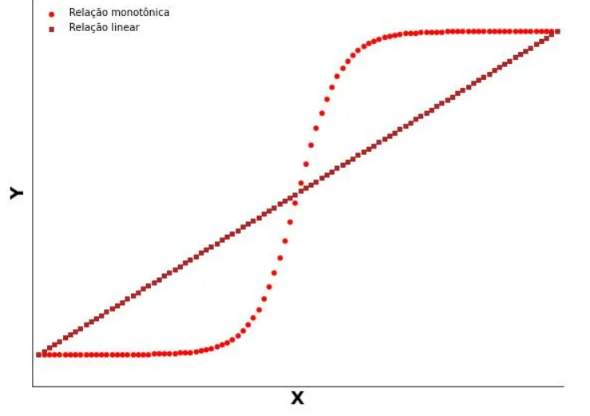
8.7.2.1CORRELAÇÃO LINEAR DE PEARSON
O coeficiente de correlação de Pearson mede a intensidade e a direção da relação linear entre duas variáveis quantitativas.
Varia entre -1 e 1.
Valores próximos de 1 indicam forte correlação linear positiva (quando uma aumenta, a outra também tende a aumentar).
Valores próximos de -1 indicam forte correlação linear negativa (quando uma aumenta, a outra tende a diminuir).
Valores próximos de 0 indicam ausência de correlação linear.
Veja os exemplos:
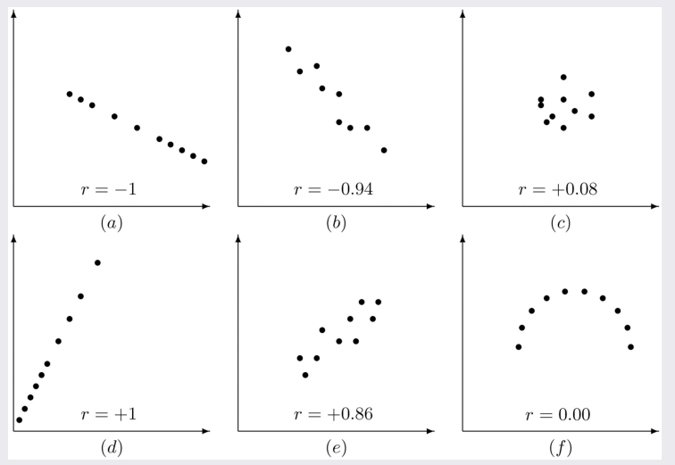
É importante lembrar que o coeficiente de correlação linear de Pearson mede apenas relações lineares. Se o padrão for curvo, o coeficiente pode ser baixo mesmo que exista uma associação clara.
8.7.2.2CORRELAÇÃO DE SPEARMAN
Já o coeficiente de correlação de Spearman mede a intensidade e a direção da relação entre duas variáveis, mas de forma mais flexível:
Ele não se restringe à linearidade, e sim às ordens dos dados (ranks).
É especialmente útil quando a relação pode ser monótona (sempre crescente ou sempre decrescente), mas não necessariamente uma reta.
Também varia entre -1 e 1, com interpretação semelhante à de Pearson, mas com base nas posições dos valores em vez dos valores originais.
Veja os seguintes exemplos de aplicação do coeficiente de correlação de Spearman:
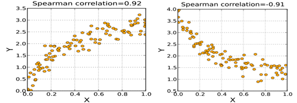
8.7.3CONEXÃO COM OS GRÁFICOS
O geom_smooth() permitiu enxergar uma curva adaptada aos dados.
O próximo passo é perguntar: essa relação pode ser resumida por uma linha reta?
Se sim, o coeficiente de correlação de Pearson quantifica essa força linear.
Se não temos certeza da linearidade, ou se a relação parece apenas crescer ou decrescer sem ser reta, podemos usar o coeficiente de Spearman.
Assim, conseguimos passar da visualização para uma medida quantitativa que apoia a interpretação.
Uma vez que a correlação de Spearman foca em relações monotônicas e não tem pressupostos lineares, como na correlação de Pearson, é possível utilizá-la para sumarizar relações não lineares. Por isso, nos dados abaixo, por exemplo, a correlação de Spearman é mais eficaz em identificar a relação entre as variáveis que a correlação de Pearson.
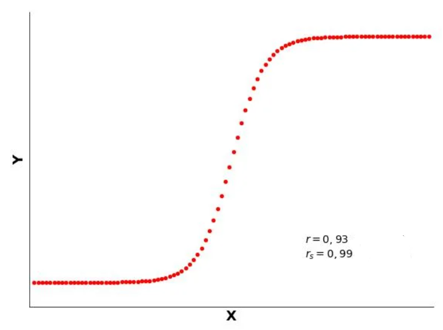
Embora ambos os coeficientes indiquem correlação significativa, a correlação de Pearson subestima a relação entre variáveis, quando comparada à correlação de Spearman. Isso ocorre, como já vimos anteriormente, porque a linearidade, tal como assumida pela correlação de Pearson, é um pressuposto mais restritivo que a monotonicidade, assumida pela correlação de Spearman.
No R, para incluir qualquer um dos coeficientes no gráfico, usaremos a funçãostat_cor do pacote ggpubr como uma camada nos nossos gráficos. Essa função tem os seguintes argumentos úteis:
method: “pearson” ou “spearman”
label.x: posição no eixo x onde será plotado o resultado.
label.y: posição no eixo y onde será plotado o resultado.
size: tamanho da letra.
Com respeito ao geom_smooth(),
Se você vai adotar o relacionamento linear para o seu gráfico, use a camada geom_smooth(method="lm") e apresente o coeficiente de correlação linear de Pearson.
Se a relação parece monótona mas não linear, o coeficiente de Spearman é mais indicado. Já a linha do geom_smooth() vai servir como visualização da tendência.
Assim, faremos 2 gráficos para a nossa relação entre Teor Alcóolico e Densidade:
Gráfico A: mostra a correlação linear de Pearson e uma tendência linear
Gráfico B: mostra a correlação de Spearman e uma tendência monótona
No nosso exemplo, o coeficiente de Spearman expressa melhor a relação observada, por ser menos restritivo que o coeficiente de correlação linear. Ambos apontam para uma forte relação decrescente entre as variáveis e o coeficiente de Spearman reforça isso.
O valor p que aparece no gráfico verifica se o coeficiente é significamente diferente de 0 (ausencia de relaçao linear ou monotônica). Se for um numero menor que 0,05, o coeficiente é significativo.
Assim, para nosso caso, optamos pelo seguinte gráfico final:
O gráfico de dispersão com distribuição marginal é uma extensão do tradicional gráfico de dispersão que permite visualizar simultaneamente a relação entre duas variáveis quantitativas e a distribuição individual de cada uma delas.
Enquanto o gráfico de dispersão mostra cada observação como um ponto no plano cartesiano, permitindo identificar tendências, padrões e outliers, as distribuições marginais adicionam histogramas ou densidades nas margens dos eixos, oferecendo uma visão direta da frequência e dispersão de cada variável individualmente.
Essa abordagem é especialmente útil para:
Compreender a forma da distribuição de cada variável: Permite identificar assimetrias, picos, caudas longas e outros padrões que não são visíveis apenas na dispersão dos pontos.
Analisar simultaneamente tendência e variabilidade: Ao observar os pontos e as distribuições marginais, podemos ter uma noção mais completa da força da associação e da dispersão de cada variável.
Identificar outliers e clusters: Pontos fora do padrão e agrupamentos ficam mais evidentes quando comparados com a distribuição marginal, ajudando a guiar análises mais detalhadas.
Em resumo, o gráfico de dispersão com distribuição marginal combina informação de relação entre variáveis e informação sobre distribuições individuais, tornando-se uma ferramenta poderosa para exploração de dados e interpretação visual.
No R, este gráfico é feito com o pacote ggExtra. Para isso utilizaremos a função ggMarginal. Essa função adiciona, com o argumento type os seguintes gráficos marginais:
Histograma
Densidade
Boxplot
Violino
Densigrama (Histograma + Densidade)
o comando inicial sempre será:
A = Objeto que armazena o seu gráfico de dispersão finalggMarginal(A, type ="histogram" ou "density" ou"violin" ou "densigram" ou"boxplot")
Vamos inicialmente definir nosso gráfico de dispersão:
Agora segue o código para o gráfico de dispersão com a distribuição marginal dada por um gráfico histograma:
Código
ggMarginal(A, type ="histogram")
Analogamente, segue o código para o gráfico de dispersão com a distribuição marginal dada por um gráfico de densidade:
Código
ggMarginal(A, type ="density")
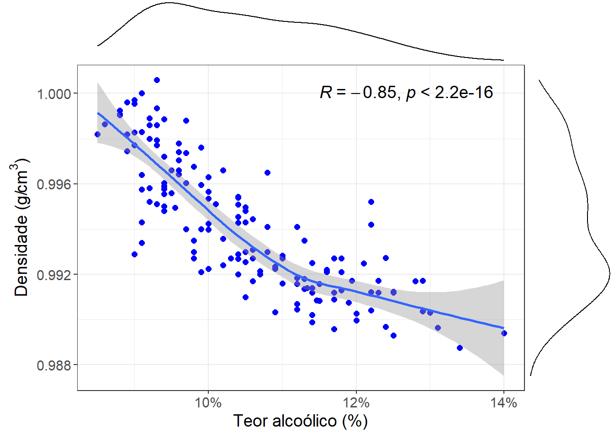
Analogamente, segue o código para o gráfico de dispersão com a distribuição marginal dada por um gráfico boxplot:
Código
ggMarginal(A, type ="boxplot")
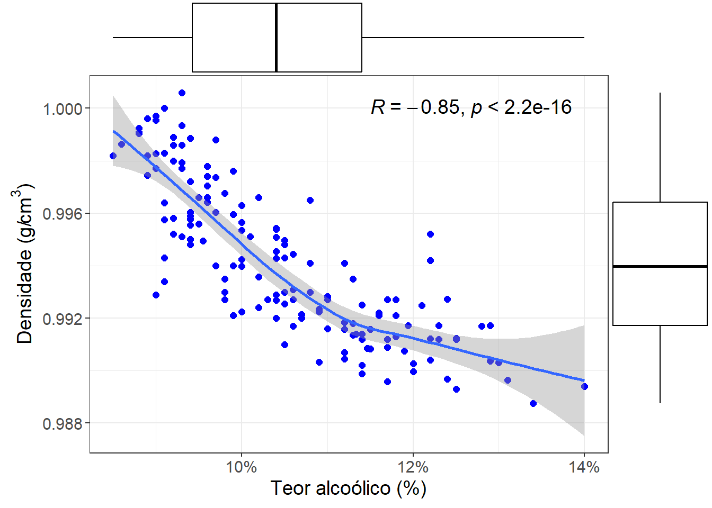
Analogamente, segue o código para o gráfico de dispersão com a distribuição marginal dada por um gráfico violino:
Código
ggMarginal(A, type ="violin")
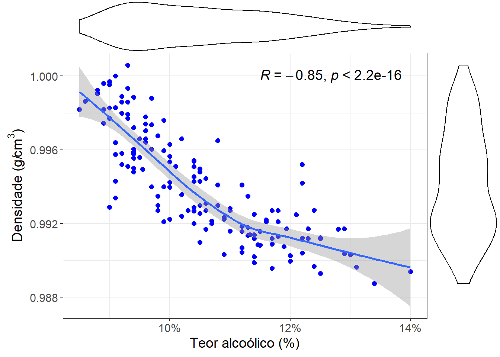
Analogamente, segue o código para o gráfico de dispersão com a distribuição marginal dada por um gráfico densigrama:
Código
ggMarginal(A, type ="densigram")
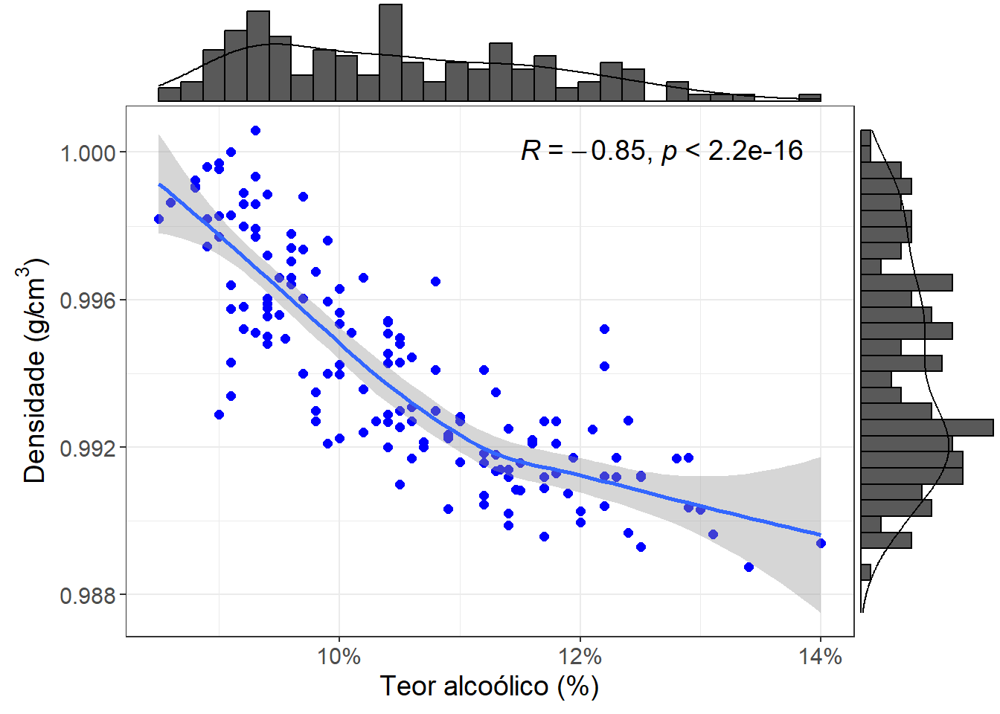
A função ggMarginal é bastante flexível e permite melhorar a estética dos gráficos marginais, dependendo do tipo de gráfico escolhido:
Histograma:
É possível alterar o número de bins, a cor da borda (color), o preenchimento (fill) e a transparência (alpha). Útil para visualizar a distribuição de frequência dos dados.
Boxplot:
Permite ajustar a cor da caixa, a cor da linha central, a largura da caixa (width) e a transparência (alpha). Mostra mediana, quartis e outliers de forma compacta.
Densidade (density):
Você pode modificar a cor da linha, o preenchimento (fill), a transparência (alpha) e controlar a suavização da curva com o parâmetro bandwidth.
Violin:
Similar ao boxplot, mas mostra a distribuição completa da densidade. É possível alterar a cor da borda, o preenchimento (fill), a transparência (alpha) e adicionar a linha da mediana.
Densigrama:
Combina histograma e densidade, permitindo editar tanto a cor e preenchimento do histograma quanto a linha de densidade e a transparência de cada camada.
Dessa forma, o ggMarginal oferece muitas opções de personalização, permitindo escolher o tipo de gráfico marginal que melhor representa a distribuição dos dados e ajustar cores, transparência e estilos para tornar a visualização mais clara e informativa.
8.9GRÁFICO CORRELOGRAMA
O gráfico correlograma é uma ferramenta visual essencial para a análise de relações de correlação entre múltiplas variáveis quantitativas. Ele representa as correlações entre pares de variáveis de forma resumida e intuitiva, utilizando cores, intensidades ou tamanhos de símbolos para indicar força e direção da associação. Esse tipo de gráfico é amplamente utilizado em estatística exploratória e serve como etapa preliminar para análises mais avançadas, como modelagem multivariada, regressão múltipla e análise de componentes principais.
As características de um gráfico correlograma são
Representação das correlações: Cada célula do gráfico mostra a correlação entre um par de variáveis. A cor ou intensidade indica correlação positiva, negativa ou ausência de correlação, permitindo uma leitura rápida do comportamento conjunto das variáveis.
Identificação de padrões gerais: O gráfico permite visualizar rapidamente quais variáveis estão fortemente correlacionadas entre si e quais são independentes, facilitando a identificação de padrões globais.
Detecção de redundâncias: Variáveis com correlação muito alta podem indicar redundância de informação, auxiliando na seleção de variáveis para análises futuras e evitando problemas como multicolinearidade em modelos de regressão.
O gráfico correlograma não apenas oferece uma visão imediata das relações entre várias variáveis, mas também serve como ferramenta estratégica para análises futuras, orientando a escolha de métodos estatísticos apropriados, a redução de dimensionalidade e o planejamento de modelos multivariados.
Ao construir um gráfico correlograma, é importante decidir qual tipo de correlação utilizar, pois cada uma fornece informações diferentes sobre a relação entre as variáveis:
Pearson: indicado quando os dados são aproximadamente contínuos e seguem relação linear. Ele mede a intensidade da associação linear e é sensível a outliers. É a escolha ideal quando você pretende realizar análises paramétricas, como regressão linear.
Spearman: indicado quando os dados podem ter relações não lineares, mas monotônicas, ou quando existem outliers. Ele utiliza os ranks das variáveis, sendo robusto e aplicável a dados ordinais. É útil quando você deseja capturar associações monotônicas gerais entre as variáveis.
Dica prática:
- Use Pearson para explorar relações lineares típicas.
- Use Spearman quando suspeitar de relações monotônicas não lineares ou quando houver outliers.
A escolha correta ajuda a garantir que seu correlograma represente de forma fiel a estrutura de associação entre as variáveis.
No R este gráfico será feito a partir da funçãocorrplot() do pacote corrplot. Primeiro, calcula-se a matriz de correlação entre as variáveis 2 a 2 utilizando os coeficientes de Spearman ou Pearson. Posteriormente, essa matriz é usada na função que gera o correlograma. Assim, a sintaxe da utilização da função corrplot() será:
M =cor(Dados,method="pearson" ou "spearman")corrplot(corr=M)
Os principais argumentos da função corrplot são:
corr = matriz de correlação
method = Define como a correlação será representada visualmente
circle – Círculos com tamanho e cor indicando magnitude e direção (padrão).
square – Quadrados com cor representando a correlação.
number – Mostra os valores numéricos das correlações.
shade – Tons de cor e sombreamento indicando intensidade.
color – Apenas cores para direção e magnitude.
pie – Mini-pizzas preenchidas pela magnitude e coloridas pela direção.
type = Define qual parte da matriz de correlação será exibida:
full – Exibe a matriz completa.
upper – Exibe apenas a parte superior da matriz.
lower – Exibe apenas a parte inferior da matriz.
addCoef.col – Coloca as correlações do gráfico em determinada cor.
number.cex = Define o tamanho do número.
Para os nossos dados, por exemplo, podemos fazer o seguinte correlograma com base na correlação de Pearson:
Código
M =cor(Dados,method="pearson")corrplot(M,method ="circle",type ="upper",addCoef.col ="black")
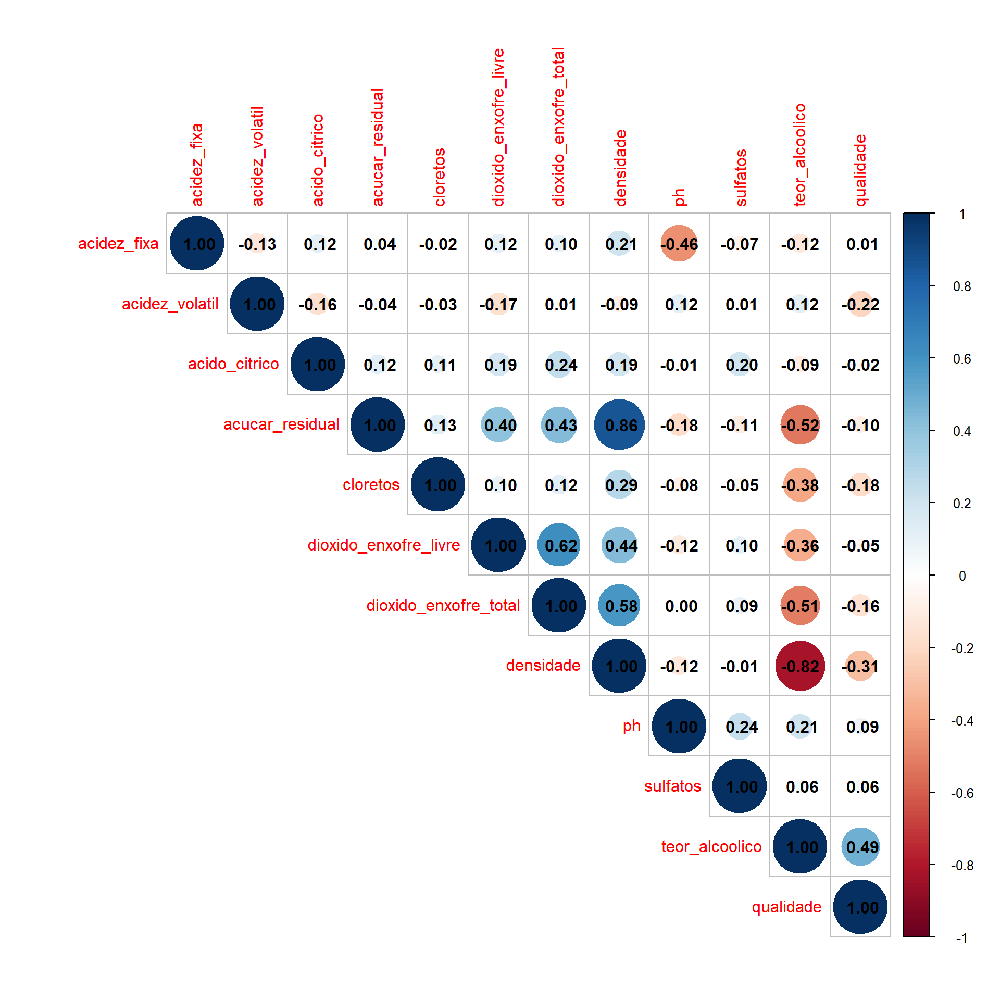
Correlações entre variáveis físico-químicas:
Açúcar residual e densidade: correlação fortíssima positiva (0.86), coerente com o fato de que açúcares aumentam a densidade do vinho.
Álcool e densidade: correlação forte negativa (-0.82), já que o álcool é menos denso que a água.
Álcool e açúcar residual: correlação negativa moderada (-0.52), indicando que vinhos mais alcoólicos tendem a ter menos açúcar residual.
SO2 livre e SO2 total: correlação positiva forte (0.62), esperado porque o total inclui a fração livre.
Correlações com a qualidade:
Álcool: correlação positiva moderada (0.49), sugerindo que vinhos mais alcoólicos tendem a ter melhor avaliação.
Acidez volátil: correlação negativa (-0.22), indicando que altos níveis de acidez volátil reduzem a qualidade percebida.
Densidade: correlação negativa moderada (-0.31), mostrando que vinhos mais densos (geralmente menos alcoólicos e mais doces) têm menor qualidade.
Cloretos: correlação negativa fraca (-0.18), indicando que excesso de sais compromete a qualidade.
Outras variáveis: relações muito fracas ou próximas de zero (ex.: açúcar residual, sulfatos)
Analogamente, tem-se o *seguinte correlograma com base na correlação de Spearman:
Código
M =cor(Dados,method="spearman")corrplot(M,method ="circle",type ="upper",addCoef.col ="black")
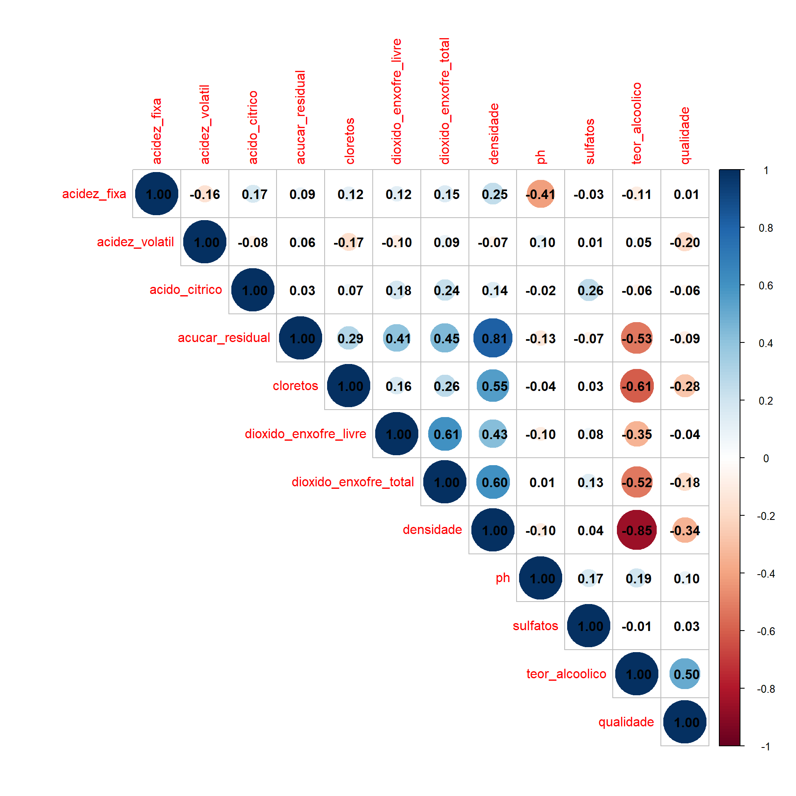
Correlações entre variáveis físico-químicas:
Açúcar residual e densidade: correlação muito forte (0.81), reforçando a relação monotônica entre as duas.
Álcool e densidade: correlação muito forte negativa (-0.85).
SO₂ livre e SO₂ total: forte correlação (0.61), consistente com Pearson.
Cloretos e densidade: correlação mais intensa em Spearman (0.55 contra 0.29 em Pearson), sugerindo que a associação é mais monotônica que linear.
Correlações com a qualidade:
Álcool: correlação positiva moderada-forte (0.50), praticamente idêntica à de Pearson.
Densidade: correlação negativa moderada (-0.34).
Acidez volátil: correlação negativa (-0.20), similar à de Pearson.
Cloretos: correlação negativa mais intensa (-0.28 em Spearman contra -0.18 em Pearson), sugerindo efeito monotônico mais claro.
Outras variáveis: correlações muito fracas ou próximas de zero.
Contraste entre Pearson e Spearman:
Ambas as matrizes apontam as mesmas variáveis principais relacionadas à qualidade:
Positivo: teor alcoólico.
Negativo: densidade, acidez volátil e cloretos.
As diferenças estão na intensidade:
Spearman detecta correlações mais fortes em algumas relações monotônicas (ex.: cloretos × qualidade, cloretos × álcool).
Pearson captura bem as relações lineares fortes (ex.: densidade × álcool, açúcar × densidade), que permanecem estáveis também em Spearman.
A interpretação dos dois métodos é consistente: álcool é o principal indicador positivo de qualidade, enquanto acidez volátil, densidade e cloretos prejudicam a avaliação. Spearman reforça que algumas associações não seguem uma linha reta, mas mantêm uma ordem clara, especialmente envolvendo os cloretos.
8.10GRÁFICO BOLHA
O gráfico bolha é uma ferramenta visual poderosa para a análise de três dimensões de dados simultaneamente. Ele representa duas variáveis quantitativas nos eixos X e Y, enquanto uma terceira variável é indicada pelo tamanho da bolha, permitindo identificar padrões, tendências e concentrações de dados de forma intuitiva. Esse tipo de gráfico é amplamente utilizado em estatística exploratória, visualização de negócios e análise multivariada.
As características de um gráfico bolha são:
Representação tripla de variáveis: Cada ponto no gráfico representa uma observação, onde a posição em X e Y indica duas variáveis e o tamanho da bolha indica a magnitude de uma terceira variável, fornecendo uma visão simultânea de múltiplos aspectos do dado.
Identificação de padrões e tendências: O gráfico permite visualizar agrupamentos, relações proporcionais e possíveis tendências entre as variáveis, ajudando a compreender interações complexas.
Destaque para outliers ou valores extremos: Bolhas desproporcionalmente grandes ou pequenas podem indicar observações atípicas ou eventos relevantes que merecem investigação detalhada.
Complementos visuais: Cores e transparências podem ser utilizadas para adicionar uma quarta dimensão categórica ou contínua, enriquecendo a interpretação e permitindo identificar subgrupos ou categorias.
Aplicações estratégicas: Gráficos bolha são úteis para análises de mercado, planejamento de recursos, avaliação de desempenho e monitoramento de indicadores, servindo como ferramenta para tomada de decisão baseada em múltiplos critérios.
O gráfico bolha oferece, portanto, uma visão simultânea de múltiplas variáveis, permitindo identificar padrões complexos, destacar observações relevantes e orientar análises futuras ou decisões estratégicas.
No R, esse gráfico é feito acrescentando no gráfico de dispersão o mapeamento size que receberá a variável que ditará o tamanho dos pontos. Assim, o esquema geral é dado pelos seguintes comandos:
Para o nosso banco de dados, vamos fazer um gráfico de dispersão das variávels teor_alcoolico com acucar_residual. Adicionalmente, vamos estabelecer que o tamanho dos pontos varie de acordo com a densidade. Como sabemos que a densidade é função dessas duas variáveis, pode ser um gráfico interessante para ilustrar isso. Segue, então os comandos para isso:
Antes de interpretarmos o gráfico, note que o ggplot2 escolhe os próprios pontos de corte para o tamanho dos pontos. Essa escolha é arbitrária e pode não ser representativa para os dados. Vamos acrescentar a camada scale_size_continuous para então melhorar essa representação. Essa camada tem os seguintes argumentos:
name
Define o título da legenda associada ao tamanho dos pontos.
Exemplo: name = "nome da legenda".
range
Define o tamanho mínimo e máximo dos pontos no gráfico.
Exemplo: range = c(1, 10).
breaks
Especifica os valores que aparecerão na legenda.
Pode ser um vetor numérico ou função.
Exemplo: breaks = c(0,0.25,0.5,1).
labels
Define os rótulos exibidos na legenda, correspondentes aos valores em breaks.
Pode ser um vetor de textos ou os próprios valores do breaks.
Como não temos pontos de corte determinísticos, podemos usar os quintis (cada quintil contem 20% dos dados):
Agora sim podemos verificar em quais regiões do teor alcoolico e o açúcar reidual a densidade é mais elevada ou pequena. Para valores altos de açucar e baixos de teor alóolico, são detectadas as maiores densidades. Por outro lado, para valores maioes de álcool e menores de açucar, são detectados os menores valores de densidade.
8.11GRÁFICO QUANTIL-QUANTIL (Q-Q PLOT)
O gráfico quantil-quantil (Q-Q plot) é uma ferramenta poderosa na estatística exploratória que nos permite comparar a distribuição de um conjunto de dados com uma distribuição teórica. Ele é especialmente útil para avaliar se nossos dados seguem um comportamento esperado, como a distribuição normal, que é central em muitas análises estatísticas.
Antes de explorarmos o Q-Q plot, é importante entender a distribuição normal. Ela é uma distribuição de probabilidades muito comum, conhecida pelo formato de sino simétrico. Muitas variáveis naturais e sociais tendem a se comportar de forma aproximadamente normal quando observadas em grandes quantidades. Por exemplo:
Altura de pessoas adultas em uma população;
Notas de uma prova aplicada a um grande grupo de estudantes;
Erros de medição em experimentos científicos.
Veja a função densidade de probabilidade de uma variável que possui distribuição normal:
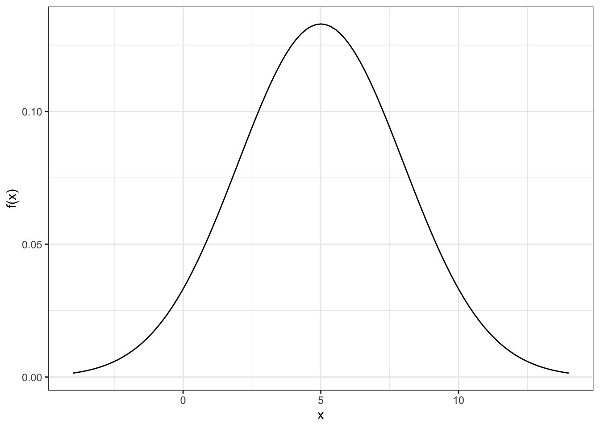
A distribuição normal é importante porque muitas técnicas estatísticas clássicas assumem que os dados se comportam dessa maneira. Saber se nossos dados se aproximam da normalidade ajuda a escolher os métodos estatísticos mais apropriados.
O Q-Q plot nos ajuda a visualizar diferenças entre a distribuição dos dados e a distribuição normal. Ele faz isso ao comparar quantis — pontos que dividem nossos dados em partes iguais — com os quantis correspondentes da distribuição teórica (normal).
Se os pontos no gráfico se aproximarem de uma linha reta, podemos concluir que os dados são aproximadamente normais.
Se houver desvios significativos da linha, isso indica que os dados não seguem a normalidade, podendo apresentar assimetria ou caudas mais longas/curtas do que o esperado.
Em resumo, o Q-Q plot é uma ferramenta visual intuitiva que nos permite:
Diagnosticar rapidamente a normalidade dos dados;
Identificar padrões de desvio da normalidade (assimetria, caudas longas ou curtas);
Tomar decisões informadas sobre qual análise estatística aplicar.
No R, podemos criar Q-Q plots de maneira elegante usando o ggplot2, juntamente com o pacote qqplotr. No pacote qqplotr, podemos usar três funções que se complementam para construir um gráfico quantil-quantil mais completo e interpretável:
stat_qq_point()
Plota os pontos correspondentes à comparação entre os quantis amostrais (dos dados) e os quantis teóricos (da distribuição de referência).
Permite visualizar se os dados seguem aproximadamente a distribuição teórica escolhida.
stat_qq_line()
Adiciona uma linha de referência ao gráfico Q-Q.
Essa linha é ajustada de acordo com os quantis da amostra, servindo como um guia visual para verificar o quanto os pontos estão alinhados com a distribuição teórica.
stat_qq_band()
Cria uma faixa de confiança (bandas) em torno da linha teórica.
Essa faixa indica a variabilidade esperada devido ao acaso; pontos fora dela sugerem desvios mais significativos da distribuição teórica.
O argumento fill permite colorir as bandas.
Como temos somente uma variável para ser associada à geometria, o comando inicial sempre será:
Note que, como a cauda à direita da distribuição é mais pesada os pontos finais no gráfico q-q plot se encontram fora da banda de confiança, reforçando a não normalidade dos dados.
8.12SITUAÇÃO PRÁTICA MOTIVADORA II
O Global Burden of Disease (GBD) é um dos maiores e mais abrangentes estudos epidemiológicos do mundo, conduzido pelo Institute for Health Metrics and Evaluation (IHME). Seu objetivo é estimar, de forma padronizada e comparável entre países e ao longo do tempo, o impacto de doenças, lesões e fatores de risco sobre a saúde das populações. O GBD reúne informações de múltiplas fontes, aplica métodos estatísticos rigorosos e produz indicadores que subsidiam gestores, pesquisadores e formuladores de políticas públicas.
Neste trabalho, utilizamos a base do GBD referente a acidentes de transporte envolvendo motociclistas, abrangendo o período de 1990 a 2023. O conjunto de dados inclui três variáveis:
Ano: Anos entre 1990 e 2023
Numero: Número absoluto de óbitos por acidentes com motociclistas.
Taxa: Taxa de mortalidade por 100 mil habitantes.
A partir desses dados, buscamos Descrever a evolução temporal do número de óbitos e da taxa de mortalidade de motociclistas de 1990 a 2023. Assim, objetiva-se identificar tendências e padrões epidemiológicos que possam orientar estratégias de prevenção e políticas públicas de segurança viária.
A base de dados está armazenada no arquivo DadosQuanti2.xlsx. Os comandos a seguir fazem a leitura dessa base de dados:
Código
Dados =read.xlsx("DadosMoto.xlsx")
8.13GRÁFICO SÉRIE TEMPORAL
O gráfico de série temporal é uma ferramenta essencial para a análise de dados que variam ao longo do tempo. Ele representa cada observação em função de um eixo temporal, permitindo visualizar padrões, tendências e flutuações de uma variável quantitativa. Esse tipo de gráfico é amplamente utilizado em economia, epidemiologia, demografia, meteorologia e em diversas áreas que lidam com dados cronológicos.
Características principais:
Eixo temporal: O eixo horizontal (x) corresponde ao tempo, que pode estar em dias, meses, anos, trimestres ou qualquer outra unidade cronológica. O eixo vertical (y) representa os valores da variável observada.
Evolução ao longo do tempo: O gráfico mostra como a variável se comporta à medida que o tempo avança, possibilitando identificar períodos de crescimento, queda ou estabilidade.
Tendência geral: Muitas séries apresentam uma tendência de longo prazo. Essa tendência pode ser observada diretamente na linha que conecta os pontos.
Sazonalidade e ciclos: O gráfico facilita a identificação de padrões repetitivos ao longo do tempo (sazonalidade) ou ciclos mais longos.
Variações aleatórias: Nem todo comportamento segue um padrão claro. O gráfico mostra também flutuações imprevisíveis.
Outliers: Pontos isolados no tempo que destoam do padrão podem indicar eventos específicos ou erros de medição.
Complementos visuais: Linhas de tendência, médias móveis ou marcações de períodos específicos podem enriquecer a análise.
No R o gráfico de série temporal pode ser feito com o pacote ggplot2 a partir da função geométrica geom_line()com a seguinte sintaxe:
ggplot(Dados,aes(x = tempo, y = variavel)+geom_line()
Por exemplo, vamos fazer o gráfico série temporal da taxa de mortalidade por 100 mil habitantes envolvendo motociclistas no estado do Rio de Janeiro de 1990 a 2023:
Código
ggplot(data=Dados,mapping=aes(x=Ano,y=Taxa))+geom_line()+xlab("Ano")+ylab("Taxa de mortalidade por 100 mil habitantes")+theme_bw()+theme(text =element_text(size =14))
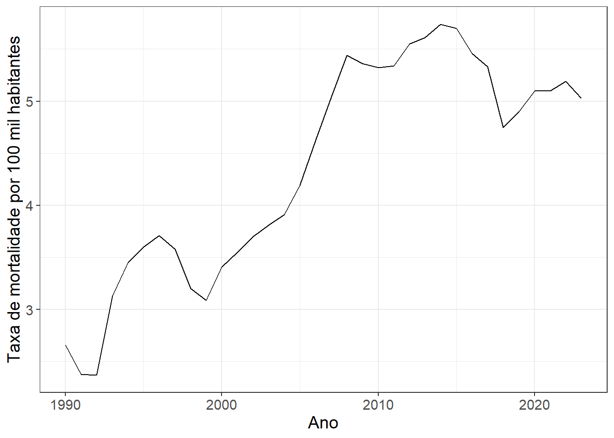
Neste gráfico, nota-se que:
Tendência geral (1990–2023): aumento da mortalidade de 2,66 para cerca de 5,0, quase o dobro no período.
Década de 1990: crescimento inicial e estabilização.
2000–2015: período de maior aumento e consolidação de taxas mais altas.
2016 em diante: oscilações, com queda pré-pandemia, alta durante a COVID-19 e recuo em 2023.
Para acrescentar novos efeitos estéticos a este gráfico, a função geom_line() tem os seguintes argumentos:
color: Define a cor da linha, ex.: geom_line(color = "blue")
linewidth: Define a espessura da linha, ex.: geom_line(size = 1.5)
linetype: Define o tipo da linha, ex.: geom_line(linetype = "dashed"). Opções:
alpha: Define a transparência da linha (0 a 1), ex.: geom_line(alpha = 0.7)
Além disso, você pode acrescentar a funçãogeom_point() para incluir os pontos em cada observação. As especificidades dessa função já foram vistos na seção onde estudamos o gráfico de dispersão.
Portanto, um gráfico melhor elaborado pode ser o seguinte:
Código
ggplot(data=Dados,mapping=aes(x=Ano,y=Taxa))+geom_line(linewidth=2,col="red")+geom_point(size=4)+xlab("Ano")+ylab("Taxa de mortalidade por 100 mil habitantes")+theme_bw()+theme(text =element_text(size =14))
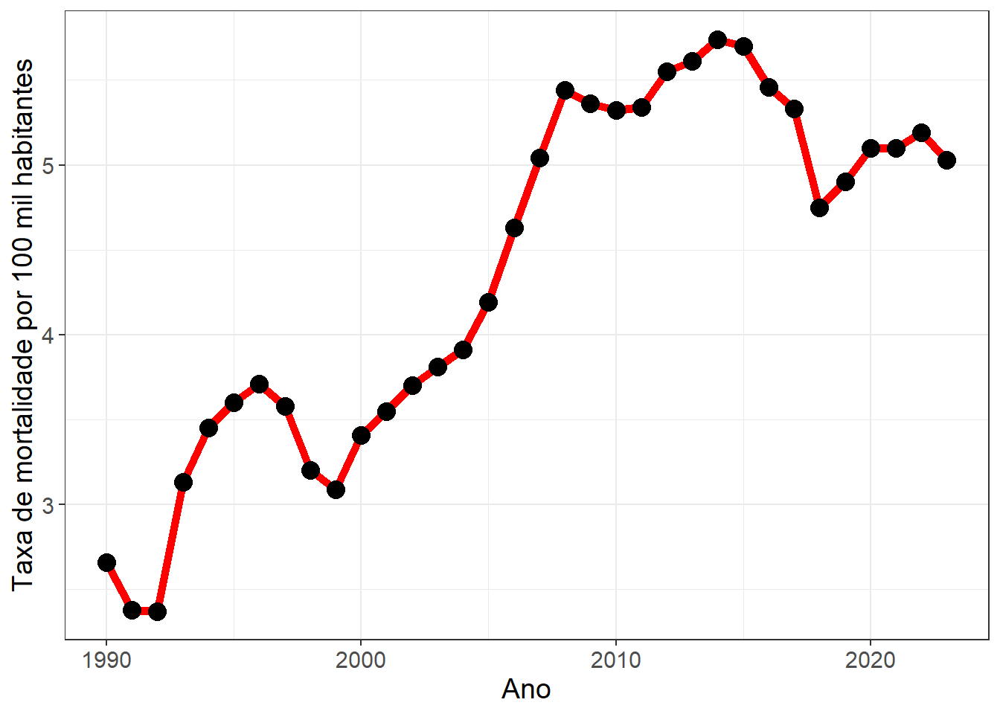
8.14GRÁFICO TEMPORAL COM DOIS EIXOS
O gráfico de série temporal com dois eixos é uma ferramenta poderosa quando queremos analisar duas variáveis quantitativas distintas ao longo do tempo, cada uma com unidades ou escalas diferentes. Esse tipo de gráfico permite comparar tendências, identificar correlações e observar como duas séries evoluem simultaneamente.
Características principais:
Eixo temporal comum: O eixo horizontal (x) representa o tempo, que pode ser medido em dias, meses, anos, trimestres ou qualquer outra unidade cronológica.
Eixos verticais distintos: Cada variável tem seu próprio eixo vertical (y1 e y2), permitindo comparar grandezas diferentes sem distorcer a visualização.
Comparação de tendências: O gráfico facilita identificar se as duas variáveis seguem padrões similares, divergentes ou inversos ao longo do tempo.
Sazonalidade e ciclos: Permite observar padrões repetitivos em cada variável, mesmo que suas magnitudes sejam diferentes.
Variações aleatórias e outliers: Mostra flutuações imprevisíveis em cada série e pontos isolados que destoam do padrão esperado.
Complementos visuais: Linhas de tendência, médias móveis ou marcações de períodos específicos podem enriquecer a análise, permitindo visualizar interações ou diferenças entre as séries.
⚠️ Atenção: Gráficos com dois eixos devem ser usados com cuidado, para não induzir a interpretações equivocadas. É recomendável sempre destacar cores, legendas e escalas para que a leitura seja clara.
A partir do pacote ggplot2, vamos fazer um gráfico temporal com dos eixos. Um gráfico de barras será utilizado para o número absoluto de óbitos e um gráfico de série temporal será utilizado para representar a taxa de mortalidade. As duas variáveis tem escalas bem distintas. Por isso, este gráfico é interessante para este contexto.
Para construir o gráfico, primeiro definimos um coeficiente de escala chamado coef, que serve para colocar a taxa de mortalidade (que é menor em magnitude) na mesma ordem de grandeza do número absoluto de óbitos. Isso é necessário porque queremos exibir duas variáveis diferentes (número e taxa) no mesmo gráfico, utilizando dois eixos-y. (Você vai testando o coef que melhor se ajusta aos seus dados)
Em seguida:
Começamos chamando a função ggplot(Dados, aes(x=Ano)), definindo o ano como variável no eixo-x.
Utilizamos geom_bar() para criar barras que representam o número absoluto de óbitos.
Definimos y=Numero, fill="cadetblue" para a cor e stat="identity" para que a altura da barra corresponda diretamente ao valor dos dados.
Adicionamos uma linha com geom_line(), que representa a taxa de mortalidade multiplicada por coef, para que ela se alinhe ao eixo principal.
A linha é desenhada em vermelho, mais grossa (linewidth=2).
Para destacar os pontos dessa linha, adicionamos geom_point() com size=3.
Em seguida, ajustamos os rótulos do gráfico com xlab("Ano") e aplicamos um tema mais limpo (theme_bw()).
Para melhorar a leitura, ampliamos o tamanho do texto (theme(text = element_text(size = 14))).
O eixo-y é configurado com scale_y_continuous(), onde o eixo principal mostra o número de óbitos e o eixo secundário (definido com sec_axis(~./coef, name="Taxa de mortalidade por 100 mil habitantes")) mostra a taxa, revertendo a transformação de escala.
Por fim, usamos theme() para personalizar as cores dos títulos dos eixos:
o eixo da esquerda em azul (cadetblue4) e o eixo da direita em vermelho, reforçando a correspondência com as cores do gráfico.
Tem-se, portanto, o seguinte código:
Código
coef <-200ggplot(Dados,aes(x=Ano))+geom_bar(aes(y=Numero),fill="cadetblue",stat="identity")+geom_line(aes(y=Taxa*coef),linewidth=2,col="red")+geom_point(aes(y=Taxa*coef),size=3)+xlab("Ano")+theme_bw()+theme(text =element_text(size =14))+scale_y_continuous(name ="Número de óbitos",sec.axis =sec_axis(~./coef, name="Taxa de mortalidade por 100 mil habitantes") ) +theme(text =element_text(size =14),axis.title.y.left =element_text(color ="cadetblue4"),axis.title.y.right =element_text(color ="red"))
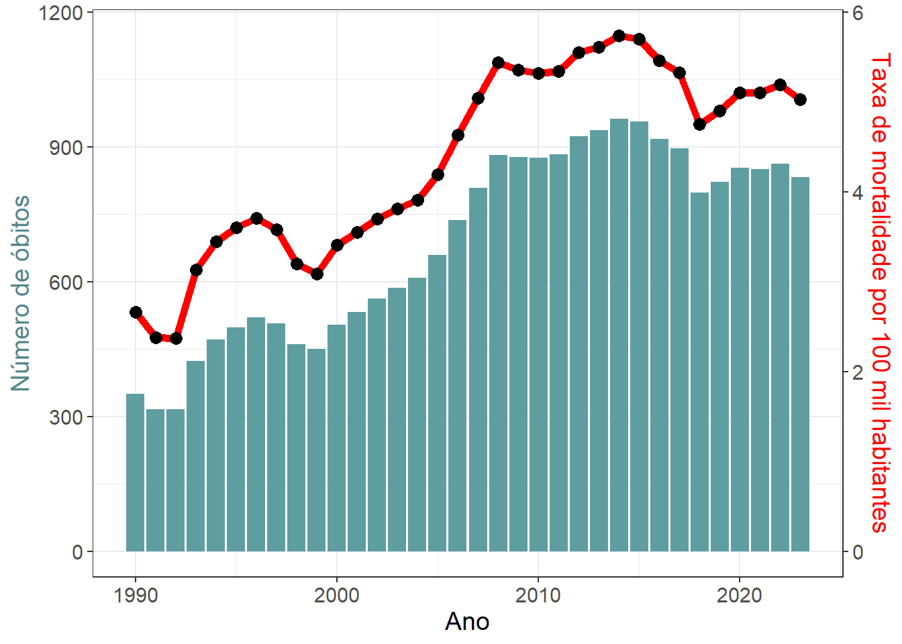
Código fonte
---output: html_documenteditor_options: chunk_output_type: console---# **VARIÁVEIS QUANTITATIVAS**## **INTRODUÇÃO**As **variáveis quantitativas** são aquelas que representam **valores numéricos contínuos ou discretos**, podendo ser medidos ou contados. Exemplos incluem **contagens** em geral, **altura**, **peso**, **idade**, **renda** ou **temperatura** de um conjunto de observações. Em estatística, esse tipo de variável é essencial para calcular **médias, desvios, variâncias** e para realizar análises de **correlação, regressão e distribuição**.Neste capítulo, vamos explorar **formas gráficas e resumidas de representação** adequadas para variáveis quantitativas. Veremos os seguintes gráficos neste capítulo:* **Gráfico Histograma** * **Gráfico de Densidade** * **Gráfico Boxplot** * **Gráfico Boxplot + Gráfico Violino** * **Gráfico de Dispersão** * **Gráfico de Dispersão + Distribuição Marginal** * **Gráfico Correlograma** * **Gráfico Bolha** * **Gráfico Quantil Quantil (Q-Q Plot)** * **Gráfico de Série Temporal** * **Gráfico Temporal com dois Eixos** Para este **capítulo**, serão necessários os seguintes **pacotes**:```{r,warning=FALSE,message=FALSE}library(openxlsx) # Leitura de bases de dados library(ggplot2) # Gráficoslibrary(patchwork) # Organiza múltiplos gráficoslibrary(ggpubr) # Correlação no gráfico.library(ggExtra) # Gráfico de dispersão + marginaislibrary(corrplot) # Gráfico Correlogramalibrary(qqplotr) # Gráfico qqplot```## **SITUAÇÃO PRÁTICA MOTIVADORA I**A base de dados contém informações físico-químicas de diversas amostras de vinho branco, com **150 registros** coletados. Cada linha representa um vinho diferente, enquanto cada coluna corresponde a uma característica quantitativa que descreve sua composição. A seguir, apresentamos as 12 variáveis coletadas, a **unidade de medida** de cada uma e sua **descrição/importância** no universo dos vinhos:| Variável | Unidade | Descrição / Importância ||----------|---------|------------------------||`qualidade`| 0-10 | Avaliação feita por provadores, indica a qualidade percebida do vinho. ||`acidez_fixa`| g/dm³ | Representa os ácidos não voláteis do vinho. Contribui para o sabor e a preservação do vinho. ||`acidez_volatil`| g/dm³ | Medida de ácidos voláteis, como ácido acético. Valores altos podem indicar defeito ou oxidação. ||`acido_citrico`| g/dm³ | Presente naturalmente, contribui para frescor, equilíbrio e estabilidade do vinho. ||`acucar_residual`| g/dm³ | Açúcar que permanece após a fermentação. Afeta a doçura e a sensação na boca. ||`cloretos`| g/dm³ | Salinidade do vinho, em excesso pode prejudicar o sabor. ||`dioxido_enxofre_livre`| mg/dm³ | SO₂ livre, usado como conservante. Protege contra micro-organismos e oxidação. ||`dioxido_enxofre_total`| mg/dm³ | Soma do SO₂ livre e ligado. Indica a quantidade total de conservante presente. ||`densidade`| g/cm³ | Relacionada ao teor de açúcar e álcool; ajuda a estimar características sensoriais. ||`ph`| escala | Mede a acidez total. Influencia sabor, estabilidade e capacidade de conservação. ||`sulfatos`| g/dm³ | Compostos que contribuem para aroma, estabilidade e prevenção de oxidação. ||`teor_alcoolico`| % | Determina o corpo e a sensação do vinho na boca. |Os objetivos desta análise são: * **Compreender as propriedades físico-químicas dos vinhos brancos**, descrevendo suas principais características e particularidades. * **Explorar a variabilidade entre as amostras**, identificando padrões, similaridades e possíveis discrepâncias nos dados. * **Investigar relações entre atributos físico-químicos**, verificando quais deles se associam mais fortemente à percepção de qualidade. * **Fornecer uma visão geral interpretável**, que auxilie na **previsão da qualidade percebida pelos provadores** e gere subsídios práticos para enólogos e pesquisadores. Essa base é ideal para aplicações de análise exploratória, visualização de dados e modelagem preditiva, permitindo estudar distribuições, correlações e padrões entre as variáveis. A base de dados está **armazenada no arquivo** `DadosVinho.xlsx`. Os **comandos** a seguir fazem a **leitura** dessa base de dados:```{r}Dados =read.xlsx("DadosVinho.xlsx")```## **GRÁFICO HISTOGRAMA**O **histograma** é um dos gráficos mais importantes para a análise de **variáveis quantitativas**, pois permite visualizar de forma intuitiva como os dados estão distribuídos. Ele organiza os valores em **intervalos consecutivos**, chamados de **classes** ou **bins**, e representa a **frequência** ou densidade de observações em cada intervalo por meio de **barras verticais contíguas**. As **características de um histograma** são:1. **Altura das barras:** Cada barra indica a quantidade de observações que caem dentro de um determinado intervalo. Barras mais altas representam intervalos com maior concentração de valores, enquanto barras mais baixas indicam intervalos com poucas observações. A altura das barras pode ser expressa como **frequência absoluta**, **frequência relativa** ou **densidade**, dependendo do objetivo da análise.2. **Largura das barras:** A escolha da largura das barras é crucial para a interpretação do gráfico. Barras muito largas podem **mascarar padrões importantes**, tornando a distribuição aparentemente mais homogênea do que realmente é. Por outro lado, barras muito estreitas podem resultar em um histograma **irregular e ruidoso**, dificultando a identificação de tendências gerais.3. **Equidistância das barras:** Em um histograma tradicional, as barras possuem **mesma largura**, garantindo que apenas a altura das barras varie para representar diferenças nas frequências. Essa uniformidade é essencial para que a interpretação da distribuição seja precisa.4. **Forma da distribuição:** O histograma revela padrões importantes nos dados, como **simetria**, **assimetria**, **picos** (modos), **vales** e até **outliers**. Por exemplo, uma distribuição com uma única barra mais alta no centro tende a indicar dados concentrados em torno da média, enquanto múltiplos picos podem indicar que os dados vêm de subgrupos diferentes.5. **Número de classes:** O número de intervalos escolhidos afeta diretamente a percepção da distribuição. Um número insuficiente de classes pode **ocultar variabilidade**, enquanto um número excessivo pode gerar **flutuações artificiais**. Veja, por exemplo, o efeito do número de classes nos seguintes histogramas:O histograma não só fornece uma **visão geral da distribuição dos dados**, mas também é uma etapa fundamental antes da aplicação de técnicas estatísticas mais avançadas, como **teste de normalidade**, **análise de dispersão** ou **modelagem estatística**. Ele ajuda o analista a decidir se transformações nos dados são necessárias, se existem **valores extremos que merecem atenção** ou se a distribuição segue um **padrão esperado**.> Em resumo, o histograma é uma ferramenta **simples, mas poderosa**, que combina estética visual com informação quantitativa, sendo essencial para qualquer análise de **variáveis numéricas**.Para construir um **histograma** no `R` com o `ggplot2`, utilizaremos a **função geométrica** `geom_histogram()`. Como temos somente **uma variável** para ser associada à geometria, o **comando inicial** sempre será:```rggplot(Dados,aes(x=variavelX))+geom_histogram()```Para acessar todos os dados do histograma construído (intervalos, por exemplo), basta guardar seu histograma em um objeto (`Histograma`, por exemplo) e utilizar o seguinte comando:```rggplot_build(Histograma)$data[[1]]```Vamos dividir este **tópico** abordando três diferentes formas de **definir a altura da barra**:* **Frequência absoluta*** **Frequência relativa*** **Densidade**Em todos os exemplos, será **trabalhado o histograma para a variável** `teor_alcoolico`.### **FREQUÊNCIA ABSOLUTA**A **frequência absoluta** é a forma mais direta de definir a altura das barras de um histograma. Ela indica **o número total de observações que caem em cada intervalo da variável**. No caso da variável `teor_alcoolico`, cada barra do histograma mostrará **quantos vinhos da amostra possuem teor alcoólico dentro de um determinado intervalo**. **Características importantes:**- Barras mais altas indicam **intervalos com maior frequência de observações**. - Barras mais baixas indicam **intervalos com menor frequência**. - A soma das alturas das barras corresponde ao **total de observações da amostra**. A **frequência absoluta** é o padrão da **geometria** `geom_histogram()`. Vamos então ao nosso **primeiro histograma:**```{r,warnings=F,message=F}ggplot(data=Dados,mapping=aes(x=teor_alcoolico))+geom_histogram()+xlab("Teor alcoólico (%)")+ylab("Frequência absoluta")+theme_bw()+scale_x_continuous(labels =function(x) paste0(x, "%"))+theme(text =element_text(size =14))```> O comando `scale_x_continuous(labels = function(x) paste0(x, "%"))` coloca o eixo x em porcentagem (sem multiplicar por 100)Nota-se que a **distribuição dos dados é assimétrica à direita**, com **maior concentração em menores valores** do teor alcoólico.> Ao usar `geom_histogram()`, o pacote **cria automaticamente 30 barras (bins) por padrão**, dividindo os dados em 30 intervalos de igual largura.Em uma situação como a nossa (n=150), **30 barras pode deixar o gráfico muito ruidoso** e não fornecer uma **boa síntese** como observado acima. Assim, antes de trazer cores e/ou mais informações para o gráfico, **vamos discutir sobre a largura da barra**.#### **LARGURA DA BARRA**A **largura da barra** de um histograma pode ser definida de diferentes **maneiras**:- **Amplitude fixa dos intervalos**: o pesquisador define diretamente a largura de cada classe (ex.: largura = 5).- **Número de barras**: especifica-se quantas barras o histograma deve ter, e a largura é calculada automaticamente a partir da amplitude dos dados.- **Intervalos determinísticos**: criados manualmente de acordo com a conveniência do estudo (ex.: faixas etárias 0–10, 10–20, 20–30 etc.).- **Regras ótimas**: critérios estatísticos, Freedman–Diaconis ou Scott, que determinam a largura adequada com base no tamanho da amostra e na variabilidade dos dados.##### **AMPLITUDE FIXA**:Para a **amplitude fixa**, utlizaremos **o argumento** `binwidth`, dentro do `geom_histogram()`. Por exemplo, para garantir **barras com amplitude de 0.5**%, utilizaremos o seguinte código:```{r}ggplot(data = Dados, aes(x = teor_alcoolico)) +geom_histogram(binwidth =0.5) +xlab("Teor alcoólico (%)") +ylab("Frequência absoluta") +theme_bw()+scale_x_continuous(labels =function(x) paste0(x, "%"))+theme(text =element_text(size =14))```##### **NÚMERO DE BARRAS**Você **define a quantidade de barras com o argumento `bins` dentro do `geom_histogram()`**. Por exemplo, vamos construir um histograma com 15 barras:```{r}ggplot(data = Dados, aes(x = teor_alcoolico)) +geom_histogram(bins =15) +xlab("Teor alcoólico (%)") +ylab("Frequência absoluta") +theme_bw()+scale_x_continuous(labels =function(x) paste0(x, "%"))+theme(text =element_text(size =14))```##### **INTERVALOS DETERMINÍSTICOS**Se você tem os **pontos de corte específicos para seu problema** (equidistantes ou não), você mesmo os define no argumento `breaks` da função `geom_histogram()`. Por exemplo, se queremos **exatamente os intervalos** [8,9), [9,10), [10,11), [11,12), [12,13),[13,14], utilizaremos o seguinte `breaks`:```{r}ggplot(data = Dados, aes(x = teor_alcoolico)) +geom_histogram(breaks=seq(from=8,to=14,by=1)) +xlab("Teor alcoólico (%)") +ylab("Frequência absoluta") +theme_bw()+scale_x_continuous(labels =function(x) paste0(x, "%"))+theme(text =element_text(size =14))```Agora, se **queremos exatamente os intervalos não equidistantes** [8,10), [10,11), [11,12), [12,14) utilizaremos o seguinte `breaks`:```{r}ggplot(data = Dados, aes(x = teor_alcoolico)) +geom_histogram(breaks=c(8,10,11,12,14)) +xlab("Teor alcoólico (%)") +ylab("Frequência absoluta") +theme_bw()+scale_x_continuous(labels =function(x) paste0(x, "%"))+theme(text =element_text(size =14))```> Assim, conseguimos fazer gráficos histograma que **não possuem** **barras equidistantes**.##### **REGRAS ÓTIMAS**Quando **não há o conhecimento prévio** de **quantas barras são necessárias** ou qual a **amplitude prévia de cada barra**, podemos deixar que **os dados mesmos definem a nossa escolha a partir de duas regras ótimas**:1. **FREEDMAN-DIACONIS**- **Fórmula da largura da barra (binwidth):** $$h = 2 \times \frac{\textrm{IQR}}{n^{1/3}}$$onde $\textrm{IQR}$ é o **intervalo interquartil** (Q3 – Q1) e $n$ é o **número de observações.**- **Vantagens:** - Ajusta a largura das barras de acordo com a **dispersão real dos dados**. - **Robusta a outliers**, pois usa o IQR em vez do desvio padrão. - **Usabilidade:** - Ideal para **distribuições assimétricas** ou quando existem **outliers** que poderiam **distorcer a largura das barras**.2. **SCOTT**- **Fórmula da largura da barra (binwidth):** $$h = 3.5 \times \frac{\sigma}{n^{1/3}}$$ onde $\sigma$ é o **desvio padrão** da amostra e $n$ é o **número de observações**.- **Vantagens:** - Fácil de **calcular** e funciona bem para **distribuições aproximadamente normais (simétricas)**. - Ajusta a **largura das barras** à dispersão dos dados.- **Usabilidade:** - Boa escolha quando os dados são **simétricos e sem valores extremos** significativos.Para obter **o número de bins** com base nas **amplitudes das barras calculadas por cada uma dessas regras** podemos usar, respectivamente, as **funções** `nclass.FD()` e `nclass.scott()`. Essas **funções devem ser aplicadas nos dados da variável de interesse**.```{r}bins_fd <-nclass.FD(Dados$teor_alcoolico)bins_scott <-nclass.scott(Dados$teor_alcoolico)# Histograma Freedman–DiaconisA <-ggplot(Dados, aes(x = teor_alcoolico)) +geom_histogram(bins = bins_fd) +ggtitle("Regra Freedman-Diaconis") +xlab("Teor alcoólico (%)") +ylab("Frequência absoluta") +theme_bw()+scale_x_continuous(labels =function(x) paste0(x, "%"))+theme(text =element_text(size =14))# Histograma ScottB <-ggplot(Dados, aes(x = teor_alcoolico)) +geom_histogram(bins = bins_scott) +ggtitle("Regra Scott") +xlab("Teor alcoólico (%)") +ylab("Frequência absoluta") +theme_bw()+scale_x_continuous(labels =function(x) paste0(x, "%"))+theme(text =element_text(size =14))# Colocando os dois gráficos lado a ladoA+B```> O pacote `patchwork()` permite colocar facilmente gráficos em um grid lado a lado apenas somando os objetos que armazenam seus gráficos. É possível montar grids complexos com outros operadores também.> Como os nossos dados são assimétricos, optaremos pela escolha a partir da regra ótima de Freedman-Diaconis.Por fim, vamos **adicionar cores ao nosso gráfico final**. Para isso, usamos os **argumentos** `fill` (cor interna do histograma) e `color` (cor da borda das barras), dentro da função `geom_histogram()`. Além disso, podemos **adicionar rótulos em cima das barras para detalhar as contagems com a geometria** `geom_text()`, já vista anteriormente.Segue o código final:```{r}ggplot(Dados, aes(x = teor_alcoolico)) +geom_histogram(bins = bins_fd,fill ="lightblue",color ="black") +geom_text(stat ="bin", bins = bins_fd,aes(label =after_stat(count)), vjust =-0.5, size =4) +xlab("Teor alcoólico (%)") +ylab("Frequência absoluta") +theme_bw() +scale_x_continuous(labels =function(x) paste0(x, "%"))+theme(text =element_text(size =14))```> É importante no `geom_stat` definir que a contagem será feita de acordo com os bins.Para seguir com os próximos conteúdos, vamos **adaptar este gráfico final**. ### **FREQUÊNCIA RELATIVA**A **frequência relativa** indica a **proporção ou percentual de observações que caem em cada intervalo da variável**. Ela é obtida dividindo-se a frequência absoluta de cada intervalo pelo **total de observações da amostra**.No caso da variável `teor_alcoolico`, cada barra do histograma mostrará **a fração de vinhos da amostra com teor alcoólico dentro de um determinado intervalo**, em vez do número absoluto.**Características importantes:**- Barras mais altas indicam **intervalos com maior proporção de observações**. - Barras mais baixas indicam **intervalos com menor proporção de observações**. - A soma de todas as alturas das barras é igual a **1** (ou 100% se for em percentual).Similarmente ao que fizemos no **gráfico de barras**, para forçar o eixo a **utilizar a frequência relativa**, usamos o mapeamento `aes(y = after_stat(count / sum(count)))` dentro do `geom_histogram()`. O `geom_text` também é adaptado assim como fizemos antes. Tem-se, portanto, o **seguinte gráfico**:```{r}ggplot(Dados, aes(x = teor_alcoolico)) +geom_histogram(aes(y =after_stat(count /sum(count))), bins = bins_fd,fill ="lightblue",color ="black") +geom_text(stat ="bin", bins = bins_fd,aes(y =after_stat(count /sum(count)),label = scales::percent(after_stat(count /sum(count)), accuracy =0.1)), vjust =-0.5, size =4) +xlab("Teor alcoólico (%)") +ylab("Frequência relativa (%)") +theme_bw() +scale_y_continuous(labels = scales::percent)+scale_x_continuous(labels =function(x) paste0(x, "%"))+theme(text =element_text(size =14))```### **DENSIDADE**A **densidade** indica **como as observações da variável se distribuem ao longo de seus valores possíveis**, ajustando as alturas das barras de forma que a **área total sob o histograma seja igual a 1**.No caso da variável `teor_alcoolico`, cada barra do histograma mostrará **a contribuição relativa de vinhos com teor alcoólico dentro de um determinado intervalo**, considerando a largura do intervalo. Assim, barras mais largas não “inflam” a contagem, pois o cálculo da densidade compensa essa diferença.**Características importantes:**- Barras mais altas indicam **intervalos com maior concentração de observações por unidade de medida**. - Barras mais baixas indicam **intervalos com menor concentração de observações por unidade de medida**. - A **área total** do histograma é igual a **1**. - Diferentemente da frequência relativa, aqui não se soma a altura das barras, mas sim **a área das barras**. O histograma de densidade pode ser visto como uma **aproximação empírica** de uma distribuição de probabilidade contínua. - Nas distribuições contínuas, não falamos em “probabilidade de um valor específico”, mas sim na **probabilidade de cair em um intervalo**. - Essa probabilidade é dada pela **área sob a curva da função densidade de probabilidade (f.d.p.)**. - Assim como no histograma de densidade, a **área total sob a curva de uma distribuição contínua é sempre 1**. 👉 Portanto, o histograma de densidade é um **elo entre os dados observados e os modelos teóricos** (como Normal, Exponencial, Uniforme etc.), servindo como ponto de partida para comparar a distribuição empírica com distribuições de probabilidade conhecidas.Para fazer um **gráfico histograma com a densidade**, usamos o mapeamento `aes(y = after_stat(density))` dentro do `geom_histogram()`. O `geom_text` também é **adaptado assim como fizemos antes**. Segue o gráfico:```{r}ggplot(Dados, aes(x = teor_alcoolico)) +geom_histogram(aes(y =after_stat(density)), bins = bins_fd,fill ="lightblue",color ="black") +geom_text(stat ="bin", bins = bins_fd,aes(y =after_stat(density),label =round(after_stat(density), 3)), vjust =-0.5, size =4) +xlab("Teor alcoólico (%)") +ylab("Densidade") +theme_bw() +scale_x_continuous(labels =function(x) paste0(x, "%")) +theme(text =element_text(size =14))```## **GRÁFICO DE DENSIDADE**O **gráfico de densidade** é uma **alternativa ao histograma para representar a distribuição de uma variável quantitativa**. Enquanto o **histograma organiza os dados em intervalos e mostra a frequência de observações em cada um deles**, o gráfico de densidade constrói uma **curva suave e contínua** que acompanha o padrão da distribuição dos dados. A ideia central é aplicar um processo **chamado** de **suavização por kernel**, que evita a **rigidez dos intervalos fixos do histograma**. Dessa forma, o **gráfico de densidade revela tendências gerais de forma mais clara e intuitiva**, principalmente quando se deseja **destacar** a **forma da distribuição** (se é simétrica, assimétrica, unimodal, bimodal, etc.). As características principais desse gráfico são: 1. **Curva contínua:** A densidade mostra como os dados estão **concentrados ao longo do eixo**, sem depender da escolha arbitrária de **larguras de classes**, como ocorre no histograma. 2. **Altura da curva:** Pontos mais altos da curva indicam regiões com **maior concentração de observações**, enquanto áreas mais baixas indicam **regiões menos prováveis**. 3. **Área total igual a 1:** A curva é normalizada de forma que a área sob ela seja **sempre igual a 1**, permitindo interpretá-la como uma estimativa da **função densidade de probabilidade** de uma variável contínua. 4. **Interpretação probabilística:** A área sob a curva **entre dois valores representa a probabilidade aproximada** de a variável assumir valores nesse intervalo. Assim, o gráfico de densidade é especialmente recomendado quando o objetivo é **entender a forma global da distribuição**, enquanto o histograma continua sendo útil para análises mais simples ou introdutórias. ### **O SUAVIZADOR KERNEL**O gráfico de densidade produzido pela função `geom_density()` é baseado em uma técnica chamada **estimativa de densidade por kernel**. A ideia central é bastante simples: em vez de dividir os dados em intervalos, como no histograma, o método coloca uma **curva suave** em torno de cada observação. Ao usar a função `geom_density()`, a curva desenhada em cada ponto do eixo \(x\) não depende de apenas um único dado, mas sim da **contribuição de todos os pontos da amostra**. Cada observação "empresta" um pouco de si para calcular a altura da curva a partir do **kernel Gaussiano** (default da função). Essa contribuição varia conforme a distância do ponto de interesse \(x_0\): - **Vizinhos próximos** de \(x_0\) têm uma contribuição grande, pois estão perto do ponto. - **Vizinhos distantes** têm contribuição pequena, já que está mais distante. O **parâmetro de suavização** \(h\) (bandwidth) controla até que ponto os vizinhos contam: - Se \(h\) é **pequeno**, apenas os vizinhos muito próximos influenciam, deixando a curva cheia de oscilações. - Se \(h\) é **grande**, até vizinhos mais distantes entram no cálculo, gerando uma curva mais suave. Assim, a **curva de densidade kernel** pode ser vista como o resultado da **soma ponderada das contribuições de todos os vizinhos em cada ponto do eixo \(x\)**.Uma regra prática bastante usada para escolher \(h\) é a **regra de Silverman**, que define o **valor automaticamente a partir do tamanho da amostra**, do **desvio-padrão e do intervalo interquartílico dos dados**. Esse **critério funciona bem na maioria das situações** e é o adotado por padrão em `geom_density()`. A Regra de Silverman é dada por:$$h = 0.9 \cdot \min\left(\hat\sigma, \frac{\textrm{IQR}}{1.34}\right) \cdot n^{-1/5}$$onde: * \(n\) = tamanho da amostra;* \(\hat\sigma\) = desvio-padrão amostral;* \(\textrm{IQR}\) = intervalo interquartílico (Q3 - Q1).No R, o valor correspondente pode ser obtido pela função `bw.nrd0()`:```{r}bw.nrd0(Dados$ph)```Outra alternativa para a escolha do *bandwidth* é o **método de Sheather-Jones**. Diferentemente da regra de Silverman, que utiliza uma fórmula direta baseada em medidas de dispersão, o método de Sheather-Jones utiliza os **próprios dados para estimar o grau de suavização mais adequado**.De forma simplificada, o método considera características da **forma e da curvatura da distribuição** para determinar automaticamente o valor de \(h\). Por ser mais adaptativo, pode ser particularmente útil para **distribuições assimétricas, multimodais ou com estruturas mais complexas**.No R, o *bandwidth* pelo método de Sheather-Jones pode ser obtido por:```{r}bw.SJ(Dados$ph)```Como temos somente **uma variável** para ser associada à geometria, o **comando inicial** sempre será:```rggplot(Dados,aes(x=variavelX))+geom_density()```Vamos então fazer um **gráfico densidade** para a variável `ph` com a função geométrica `geom_density()`:```{r}ggplot(Dados, aes(x = ph)) +geom_density( ) +xlab("PH") +ylab("Densidade") +theme_bw() +theme(text =element_text(size =14))```Nota-se que essa **variável possu um comportamento aproximadamente simétrico**, com maior concentração de valores **próximo de 3,25**. Lembrando que a escala de PH **vai de 0 a 14**. Numeros **menores que 7** indicam maior acidez. A função `geom_density()` possui **vários argumentos úteis**, a saber:- **`fill`** → define a cor de preenchimento da área sob a curva. - **`color` / `colour`** → define a cor da linha da curva.- **`alpha`** → controla a transparência do preenchimento (De 0 = totalmente transparente até 1 = totalmente opaco).- **`linewidth`** → ajusta a espessura da linha.- **`bw`** → controla a largura h, que limita a contribuição da vizinhança em cada ponto.- **`linetype`** → altera o tipo da linha. Coloque, entre aspas, um dos seguintes:Então um gráfico final **poderia ser**, por exemplo:```{r}ggplot(Dados, aes(x = ph)) +geom_density(fill="blue",color="black",alpha=0.5,linewidth =1.5,linetype="dashed") +xlab("PH") +ylab("Densidade") +theme_bw() +theme(text =element_text(size =14))```> Experimente utilizar o argumento `bw` e alterar entre as regras de Silverman e Sheather-Jones.## **GRÁFICO BOXPLOT**O **boxplot** (ou diagrama de caixa) é um dos gráficos mais importantes para a análise de **variáveis quantitativas**, pois permite visualizar de forma clara a **distribuição, a dispersão e a presença de valores extremos** em um conjunto de dados. Ele resume a informação por meio de **quantis** e evidencia a **mediana**, o **intervalo interquartílico (IQR)** e os **outliers** de maneira intuitiva:As **características de um boxplot** são:1. **Mediana:** A linha **dentro da caixa representa a** **mediana** dos dados, indicando o **valor central** que divide a amostra em duas metades. É uma **medida robusta** de tendência central, especialmente útil em distribuições assimétricas ou com outliers.2. **Caixa:** A caixa se estende do **primeiro quartil (Q1)** ao **terceiro quartil (Q3)**, representando o **intervalo interquartílico (IQR)**, onde se concentra a maior parte dos dados (50%). A amplitude da caixa reflete na dispersão da metade central dos valores.3. **Bigodes:** Linhas que se estendem da caixa até os valores mínimos e máximos **não considerados outliers**. Geralmente, os bigodes vão até 1,5 × IQR abaixo de Q1 ou acima de Q3, ajudando a identificar a amplitude típica dos dados.4. **Outliers:** Pontos que ficam **fora dos bigodes** são considerados **valores atípicos** e são representados individualmente. Eles podem indicar erros de medição, observações raras ou subgrupos distintos na população.5. **Simetria e assimetria:** A posição da mediana dentro da caixa e o comprimento dos bigodes fornecem indicações sobre a **simetria da distribuição**. Por exemplo, se a mediana estiver próxima de Q1 ou Q3, ou se um bigode for muito mais longo que o outro, isso sugere **assimetria** nos dados.No `R` com o `ggplot2`, o **gráfico boxplot** é feito com a função `geom_boxplot()`. Como temos somente **uma variável** para ser associada à geometria, o **comando inicial** sempre será:```rggplot(Dados,aes(x=variavelX ou y=variavely))+geom_boxplot()```Desse modo, você pode fazer um gráfico com o boxplot na horizontal (eixo x) ou na vertical (eixo y). Para a variável `acidez_fixa`, tem-se o seguinte gráfico:```{r}ggplot(data=Dados,mapping=aes(x=acidez_fixa))+geom_boxplot()+xlab(expression("Acidez fixa (g/"*dm^3*")"))+theme_bw()+theme(text =element_text(size =14))```> O gráfico boxplot apresenta 2 outliers para esta variável. Como o bigode à direita é maior que o bigode à esquerda, a distribuição parece ser assimétrica à direita (confirme com o gráfico densidade)> O comando `expression()` no `xlab` foi utilizado para retratar corretamente a unidade de medida da característica.Algumas **edições úteis** podem incluir:* O mapeamento ``y=" "` permite que a gente consiga mexer na largura da caixa.* A camada `theme(axis.text.y = element_blank(), axis.ticks.y = element_blank(),axis.title.y = element_blank()))` remove os valores no eixo y.* O argumento `width` no `geom_boxplot()` diminui a largura da caixa.* Os argumentos `fill` e `color` no `geom_boxplot()` alteram, respectivamente, as cores internas e de borda do boxplot.Segue o **novo gráfico boxplot**:```{r}ggplot(data=Dados,mapping=aes(x=acidez_fixa,y=" "))+geom_boxplot(fill="lightblue",width=0.5)+xlab(expression("Acidez fixa (g/"*dm^3*")"))+theme_bw()+theme(text =element_text(size =14),axis.text.y =element_blank(), axis.ticks.y =element_blank(),axis.title.y =element_blank())```Se o gráfico possui **outliers**, você pode **mudar a estética deles com os seguintes argumentos** da função `geom_boxplot()`:- `outlier.colour` / `outlier.color`: cor dos outliers. - `outlier.size`: tamanho dos outliers. - `outlier.alpha`: transparência dos outliers (De 0 = totalmente transparente até 1 = totalmente opaco). - `outlier.shape`: formato dos outliers. Coloque um dos seguintes números: Por exemplo:```{r}ggplot(data=Dados,mapping=aes(x=acidez_fixa,y=" "))+geom_boxplot(fill="lightblue",width=0.5,outlier.size =5,outlier.shape =21)+xlab(expression("Acidez fixa (g/"*dm^3*")"))+theme_bw()+theme(text =element_text(size =14),axis.text.y =element_blank(), axis.ticks.y =element_blank(),axis.title.y =element_blank())```## **GRÁFICO BOXPLOT + GRÁFICO VIOLINO**O **gráfico violino** pode ser adicionado ao **boxplot**, combinando a visualização tradicional de **quartis, mediana e valores extremos** com a **estimativa da densidade da distribuição dos dados**. Essa junção permite não apenas identificar medidas resumo, como o boxplot faz, mas também perceber a **forma completa da distribuição**, incluindo assimetrias, picos e regiões com maior concentração de valores. Essa integração é especialmente útil quando queremos detectar **padrões que um boxplot simples poderia ocultar**. O gráfico violino torna a análise visual mais informativa e detalhada. No `R` com o `ggplot2`, o gráfico violino é feito com a função geométrica `geom_violin()`. Essa função ajusta um `geom_density()` espelhado no gráfico. Como temos somente **uma variável** para ser associada à geometria, o **comando inicial** sempre será:```rggplot(Dados,aes(x=variavelX ou variavelY))+geom_violin()+geom_boxplot()```Para a variável `acidez_fixa`, que fizemos o gráfico boxplot há pouco, tem-se o seguinte **gráfico boxplot + gráfico violino**:```{r}ggplot(data=Dados,mapping=aes(x=acidez_fixa,y=" "))+geom_violin()+geom_boxplot(width=0.4)+xlab(expression("Acidez fixa (g/"*dm^3*")"))+theme_bw()+theme(text =element_text(size =14),axis.text.y =element_blank(), axis.ticks.y =element_blank(),axis.title.y =element_blank())```> Assim, é acrescida a densidade e, como previamos, retrata uma distribuição assimétrica à direita.Vamos acrescentar cores com o argumento `fill` em ambas as geometrias:```{r}ggplot(data=Dados,mapping=aes(x=acidez_fixa,y=" "))+geom_violin(fill="lightblue")+geom_boxplot(fill="gray",width=0.4)+xlab(expression("Acidez fixa (g/"*dm^3*")"))+theme_bw()+theme(text =element_text(size =14),axis.text.y =element_blank(), axis.ticks.y =element_blank(),axis.title.y =element_blank())```## **GRÁFICO DE DISPERSÃO**O **gráfico de dispersão** é uma ferramenta fundamental para a análise de **relações entre duas variáveis quantitativas**. Ele representa cada observação como um **ponto no plano cartesiano**, onde um eixo corresponde a uma variável e o outro eixo corresponde à segunda variável. Esse tipo de gráfico permite identificar **padrões, tendências e associações** entre as variáveis, sendo amplamente utilizado em estatística exploratória e em análises de correlação e regressão. **As características de um gráfico de dispersão são**1. **Localização dos pontos:** Cada ponto representa uma observação específica, com suas coordenadas correspondendo aos valores das duas variáveis analisadas. A posição dos pontos fornece informações visuais sobre **como uma variável se comporta em função da outra**.2. **Tendência geral:** Ao observar o conjunto de pontos, é possível identificar tendências, como **relação positiva**, **relação negativa** ou **ausência de relação aparente**. Por exemplo, se os pontos sobem da esquerda para a direita, indica que, em geral, valores maiores de uma variável estão associados a valores maiores da outra.3. **Dispersão dos pontos:** A **densidade e o espalhamento** dos pontos mostram o grau de variabilidade e a força da associação entre as variáveis. Pontos muito dispersos indicam **relação fraca**, enquanto pontos próximos de uma linha imaginária indicam **relação forte**.4. **Pontos fora do padrão (outliers):** O gráfico facilita a identificação de **valores atípicos**, que podem influenciar a análise ou indicar erros de medição. Outliers aparecem como pontos isolados, distantes da tendência geral.5. **Formato da relação:** Além de relações lineares, o gráfico de dispersão também permite identificar **relações não lineares**, como curvas ou padrões côncavos/convexos. Isso ajuda a decidir qual modelo estatístico ou transformação aplicar aos dados.6. **Complementos visuais:** Linhas de tendência, cores ou tamanhos diferentes para grupos de pontos podem ser adicionados para destacar **subgrupos, categorias ou padrões adicionais**, enriquecendo a interpretação do gráfico.O gráfico de dispersão não apenas oferece uma **visão imediata da relação entre duas variáveis**, mas também serve como **etapa preliminar** para análises mais complexas, como **cálculo de correlação**, **regressão linear ou não linear**, e **detecção de padrões ou grupos nos dados**.No `R`, juntamente com o pacote `ggplot2`, podemos fazer o gráfico de dispersão com a função geométrica `geom_point()`. Agora, temos duas variáveis. Uma será alocada ao eixo x e a outra será alocada ao eixo y. Assim, o **comando inicial** sempre será:```rggplot(Dados,aes(x=variavelX,y=variavelY))+geom_point() +```Para começar nossas **análises bivariadas**, vamos considerar o gráfico de dispersão das variáveis `teor_alcoólico`(variável X) e `densidade` (variável Y). Tem-se, portanto, nosso **primeiro gráfico de dispersão**:```{r}ggplot(data=Dados,mapping=aes(x=teor_alcoolico,y=densidade))+geom_point()+xlab("Teor alcoólico (%)")+ylab(expression("Densidade (g/"*cm^3*")"))+theme_bw()+scale_x_continuous(labels =function(x) paste0(x, "%"))+theme(text =element_text(size =14))```> Claramente há uma tendência decrescente na nuvem de pontos. À medida que o teor alcoólico aumenta a densidade diminui. Uma relação entre as variáveis já seria esperado, uma vez que a densidade está relacionada ao teor de açúcar e álcool, ajudando a estimar características sensoriais.A função `geom_point` permite os seguintes **argumentos** para modificar os pontos:- `color` : cor da borda do ponto.- `fill` : preenchimento do ponto.- `size` : tamanho do ponto.- `alpha` : transparência do ponto (De 0 = transparente até 1 = opaco).- `shape` : formato do ponto. Pode ser um dos seguintes:Assim, segue um código com os **pontos** modificados:```{r}ggplot(data=Dados,mapping=aes(x=teor_alcoolico, y=densidade))+geom_point(size=2,shape=19,color ="blue")+xlab("Teor alcoólico (%)")+ylab(expression("Densidade (g/"*cm^3*")"))+theme_bw()+scale_x_continuous(labels =function(x) paste0(x, "%"))+theme(text =element_text(size =14))```### **ADICIONANDO TENDÊNCIA**Um **gráfico de dispersão** mostra como duas variáveis se relacionam. Muitas vezes, ao observar apenas os pontos, não fica claro qual é o padrão: será que a relação é linear, curva ou talvez nem exista um padrão aparente? Para ajudar nessa tarefa, podemos adicionar **linhas de tendência** usando a função `geom_smooth()` do pacote **ggplot2**. Essa função constrói automaticamente uma curva que tenta resumir a relação entre as variáveis.O comportamento do `geom_smooth()` depende da quantidade de pontos no gráfico:- **Até 1.000 observações**: o método padrão é o **LOESS** (Local Regression). Esse método ajusta pequenas regressões locais ao longo dos dados e as combina, resultando em uma curva suave que acompanha bem até relações não lineares. - **Mais de 1.000 observações**: por questões de desempenho, o método padrão passa a ser o **GAM** (Generalized Additive Models) com uma base *spline*. Esse método também gera curvas flexíveis, mas é mais eficiente em grandes conjuntos de dados. Além da linha, o `geom_smooth()` desenha por padrão uma **faixa de confiança de 95%** em torno da tendência. Essa faixa indica a incerteza do ajuste da linha.> Então, se você **não tem ideia da forma da relação entre as variáveis**, o `geom_smooth()` no modo padrão é uma ótima escolha. Ele vai:>> - **Detectar automaticamente curvas** se elas existirem. > - **Mostrar padrões sutis** que não aparecem olhando apenas os pontos.> - **Oferecer uma noção de incerteza** pela faixa de confiança.É importante lembrar que o objetivo aqui é **explorar e visualizar padrões**, não substituir análises estatísticas formais.- Se quiser apenas a linha, sem a faixa de confiança, é possível remover a área sombreada. - Para conjuntos de dados muito grandes, considere métodos mais simples ou filtros para não sobrecarregar a visualização. - Use essa ferramenta principalmente na fase de **exploração inicial dos dados**, quando ainda estamos descobrindo o que pode estar acontecendo.No `R`, juntamente com o pacote `ggplot2`, podemos adicionar a **linha de tendência com intervalo** no gráfico de dispersão com a seguinte sintaxe:```rggplot(Dados,aes(x=variavelX,y=variavelY))+geom_point() +geom_smooth()```Segue, portanto, o **código que adiciona a linha de tendência com a banda de confiança** no nosso último gráfico de dispersão realizado:```{r,warning=F,message=F}ggplot(data=Dados,mapping=aes(x=teor_alcoolico,y=densidade))+geom_point(size=2,shape=19,color ="blue")+geom_smooth()+xlab("Teor alcoólico (%)")+ylab(expression("Densidade (g/"*cm^3*")"))+theme_bw()+scale_x_continuous(labels =function(x) paste0(x, "%"))+theme(text =element_text(size =14))```> Existe uma relação negativa clara: à medida que o teor alcoólico aumenta, a densidade diminui. A curva não é perfeitamente reta; ela mostra uma tendência suavizada, que sugere que a queda é mais acentuada em certos intervalos (entre 9% e 11%) e depois fica mais suave. A faixa cinza mais larga nas extremidades indica que a estimativa é menos confiável quando há menos observações (em teores alcoólicos muito baixos ou muito altos). Em termos práticos: vinhos com maior teor alcoólico tendem a ser menos densos, e o `geom_smooth()` ajudou a revelar esse padrão de forma clara.### **ADICIONANDO UM COEFICIENTE DE CORRELAÇÃO**No gráfico de dispersão, usamos o `geom_smooth()` para descobrir padrões mesmo quando não sabemos a forma da relação. Esse recurso é bastante útil, mas às vezes o interesse está em algo **mais simples e direto**: será que existe uma **tendência linear** entre as duas variáveis? Ou será que existe uma tendência monotónica (crescente ou decrescente)?- Uma linha reta é a forma mais básica de resumir a relação. Para avaliar isso, usamos o **coeficiente de correlação** linear de Pearson.- Para relações monotônicas (crescente ou decrescente), usamos o **coeficiente de correlação** de Spearman.Veja a diferença de uma **relação linear crescente e uma relação monotônica crescente**:#### **CORRELAÇÃO LINEAR DE PEARSON**O **coeficiente de correlação de Pearson** mede a intensidade e a direção da **relação linear** entre duas variáveis quantitativas. - Varia entre **-1 e 1**. - Valores próximos de **1** indicam forte correlação linear positiva (quando uma aumenta, a outra também tende a aumentar). - Valores próximos de **-1** indicam forte correlação linear negativa (quando uma aumenta, a outra tende a diminuir). - Valores próximos de **0** indicam ausência de correlação linear. Veja os exemplos: É importante lembrar que o coeficiente de correlação linear de Pearson mede **apenas relações lineares**. Se o padrão for curvo, o coeficiente pode ser baixo mesmo que exista uma associação clara.#### **CORRELAÇÃO DE SPEARMAN**Já o **coeficiente de correlação de Spearman** mede a intensidade e a direção da relação entre duas variáveis, mas de forma mais **flexível**: - Ele não se restringe à linearidade, e sim às **ordens** dos dados (ranks). - É especialmente útil quando a relação pode ser **monótona** (sempre crescente ou sempre decrescente), mas não necessariamente uma reta. - Também varia entre **-1 e 1**, com interpretação semelhante à de Pearson, mas com base nas posições dos valores em vez dos valores originais. Veja os seguintes exemplos de aplicação do coeficiente de correlação de Spearman:### **CONEXÃO COM OS GRÁFICOS**- O `geom_smooth()` permitiu enxergar uma curva adaptada aos dados. - O próximo passo é perguntar: **essa relação pode ser resumida por uma linha reta?** - Se sim, o coeficiente de correlação de **Pearson** quantifica essa força linear. - Se não temos certeza da linearidade, ou se a relação parece apenas crescer ou decrescer sem ser reta, podemos usar o coeficiente de **Spearman**. - Assim, conseguimos passar da visualização para uma medida quantitativa que apoia a interpretação.Uma vez que a **correlação de Spearman** foca em **relações monotônicas** e não tem pressupostos lineares, como na correlação de Pearson, **é possível utilizá-la para sumarizar relações não lineares**. Por isso, nos dados abaixo, por exemplo, a **correlação de Spearman** é mais eficaz em identificar a **relação entre as variáveis que a correlação de Pearson**.Embora ambos os **coeficientes indiquem correlação significativa**, a correlação de Pearson subestima a relação entre variáveis, quando comparada à correlação de Spearman. Isso ocorre, como já vimos anteriormente, porque a linearidade, tal como assumida pela **correlação de Pearson**, é um pressuposto mais restritivo que a monotonicidade, assumida pela **correlação de Spearman**.No `R`, para incluir qualquer um dos **coeficientes no gráfico**, usaremos a **função** `stat_cor` do pacote `ggpubr` como uma camada nos nossos gráficos. Essa função tem os **seguintes argumentos úteis**:- `method`: "pearson" ou "spearman"- `label.x`: posição no eixo x onde será plotado o resultado.- `label.y`: posição no eixo y onde será plotado o resultado.- `size`: tamanho da letra.Com respeito ao `geom_smooth()`,- Se você vai adotar o **relacionamento linear** para o seu gráfico, use a camada `geom_smooth(method="lm")` e apresente o coeficiente de correlação linear de Pearson.- Se a **relação parece monótona mas não linear**, o coeficiente de Spearman é mais indicado. Já a linha do `geom_smooth()` vai servir como visualização da tendência.Assim, faremos 2 gráficos para a nossa relação entre Teor Alcóolico e Densidade:- Gráfico A: mostra a **correlação linear de Pearson** e uma tendência linear- Gráfico B: mostra a **correlação de Spearman** e uma tendência monótonaSeguem os comandos:```{r,warning=F,message=F}A =ggplot(data=Dados, mapping=aes(x=teor_alcoolico, y=densidade)) +geom_point(size=2, shape=19, color="blue") +geom_smooth(method="lm") +stat_cor(method="pearson",label.x=11,label.y=1,size=3) +xlab("Teor alcoólico (%)") +ylab(expression("Densidade (g/"*cm^3*")")) +ggtitle("Coeficiente de Pearson")+theme_bw() +scale_x_continuous(labels=function(x) paste0(x, "%")) +theme(text =element_text(size =14))B =ggplot(data=Dados, mapping=aes(x=teor_alcoolico, y=densidade)) +geom_point(size=2, shape=19, color="blue") +geom_smooth() +stat_cor(method="spearman",label.x=11,label.y=1,size=3) +xlab("Teor alcoólico (%)") +ylab(expression("Densidade (g/"*cm^3*")")) +ggtitle("Coeficiente de Spearman")+theme_bw() +scale_x_continuous(labels=function(x) paste0(x, "%")) +theme(text =element_text(size =14))A+B```> No nosso exemplo, o coeficiente de Spearman expressa melhor a relação observada, por ser menos restritivo que o coeficiente de correlação linear. Ambos apontam para uma forte relação decrescente entre as variáveis e o coeficiente de Spearman reforça isso. > O valor p que aparece no gráfico verifica se o coeficiente é significamente diferente de 0 (ausencia de relaçao linear ou monotônica). Se for um numero menor que 0,05, o coeficiente é significativo.Assim, para nosso caso, optamos pelo seguinte gráfico final:```{r,warning=F,message=F}ggplot(data=Dados, mapping=aes(x=teor_alcoolico, y=densidade)) +geom_point(size=2, shape=19, color="blue") +geom_smooth() +stat_cor(method="spearman",label.x=11.5,label.y=1,size=5) +xlab("Teor alcoólico (%)") +ylab(expression("Densidade (g/"*cm^3*")")) +theme_bw() +scale_x_continuous(labels=function(x) paste0(x, "%"))+theme(text =element_text(size =14))```## **GRÁFICO DE DISPERSÃO + DISTRIBUIÇÃO MARGINAL**O **gráfico de dispersão com distribuição marginal** é uma extensão do tradicional gráfico de dispersão que permite **visualizar simultaneamente a relação entre duas variáveis quantitativas e a distribuição individual de cada uma delas**.Enquanto o gráfico de dispersão mostra cada observação como um ponto no plano cartesiano, permitindo identificar **tendências, padrões e outliers**, as distribuições marginais adicionam **histogramas ou densidades nas margens dos eixos**, oferecendo uma visão direta da **frequência e dispersão de cada variável individualmente**.Essa abordagem é especialmente útil para: 1. **Compreender a forma da distribuição de cada variável:** Permite identificar assimetrias, picos, caudas longas e outros padrões que não são visíveis apenas na dispersão dos pontos. 2. **Analisar simultaneamente tendência e variabilidade:** Ao observar os pontos e as distribuições marginais, podemos ter uma noção mais completa da **força da associação** e da **dispersão de cada variável**. 3. **Identificar outliers e clusters:** Pontos fora do padrão e agrupamentos ficam mais evidentes quando comparados com a distribuição marginal, ajudando a guiar análises mais detalhadas.Em resumo, o **gráfico de dispersão com distribuição marginal** combina **informação de relação entre variáveis** e **informação sobre distribuições individuais**, tornando-se uma ferramenta poderosa para **exploração de dados** e **interpretação visual**.No `R`, este gráfico é feito com o pacote `ggExtra`. Para isso utilizaremos a função `ggMarginal`. Essa função adiciona, com o argumento `type` os seguintes gráficos marginais:- **Histograma**- **Densidade**- **Boxplot**- **Violino**- **Densigrama (Histograma + Densidade)**o **comando inicial** sempre será:```rA = Objeto que armazena o seu gráfico de dispersão finalggMarginal(A, type ="histogram" ou "density" ou"violin" ou "densigram" ou"boxplot")```Vamos inicialmente definir nosso gráfico de dispersão:```{r,message=F,warning=F}A =ggplot(data=Dados, mapping=aes(x=teor_alcoolico, y=densidade)) +geom_point(size=2, shape=19, color="blue") +geom_smooth() +stat_cor(method="spearman",label.x=11.5,label.y=1,size=5) +xlab("Teor alcoólico (%)") +ylab(expression("Densidade (g/"*cm^3*")")) +theme_bw() +scale_x_continuous(labels=function(x) paste0(x, "%"))+theme(text =element_text(size =14))```Agora segue o código para o gráfico de dispersão com a distribuição marginal dada por um gráfico histograma:```{r,message=F,warning=F}ggMarginal(A, type ="histogram")```Analogamente, segue o código para o gráfico de dispersão com a distribuição marginal dada por um gráfico de densidade:```{r,message=F,warning=F}ggMarginal(A, type ="density")```Analogamente, segue o código para o gráfico de dispersão com a distribuição marginal dada por um gráfico boxplot:```{r,message=F,warning=F}ggMarginal(A, type ="boxplot")```Analogamente, segue o código para o gráfico de dispersão com a distribuição marginal dada por um gráfico violino:```{r,message=F,warning=F}ggMarginal(A, type ="violin")```Analogamente, segue o código para o gráfico de dispersão com a distribuição marginal dada por um gráfico densigrama:```{r,message=F,warning=F}ggMarginal(A, type ="densigram")```A função `ggMarginal` é bastante flexível e permite melhorar a estética dos gráficos marginais, dependendo do tipo de gráfico escolhido:- **Histograma:** É possível alterar o **número de bins**, a **cor da borda** (`color`), o **preenchimento** (`fill`) e a **transparência** (`alpha`). Útil para visualizar a distribuição de frequência dos dados.- **Boxplot:** Permite ajustar a **cor da caixa**, a **cor da linha central**, a **largura da caixa** (`width`) e a **transparência** (`alpha`). Mostra mediana, quartis e outliers de forma compacta.- **Densidade (density):** Você pode modificar a **cor da linha**, o **preenchimento** (`fill`), a **transparência** (`alpha`) e controlar a **suavização** da curva com o parâmetro `bandwidth`.- **Violin:** Similar ao boxplot, mas mostra a **distribuição completa da densidade**. É possível alterar a **cor da borda**, o **preenchimento** (`fill`), a **transparência** (`alpha`) e adicionar a **linha da mediana**.- **Densigrama:** Combina **histograma e densidade**, permitindo editar tanto a **cor e preenchimento do histograma** quanto a **linha de densidade** e a **transparência** de cada camada.Dessa forma, o `ggMarginal` oferece muitas opções de personalização, permitindo escolher o tipo de gráfico marginal que melhor representa a distribuição dos dados e ajustar cores, transparência e estilos para tornar a visualização mais clara e informativa.## **GRÁFICO CORRELOGRAMA**O **gráfico correlograma** é uma ferramenta visual essencial para a análise de **relações de correlação entre múltiplas variáveis quantitativas**. Ele representa as correlações entre pares de variáveis de forma **resumida e intuitiva**, utilizando cores, intensidades ou tamanhos de símbolos para indicar **força e direção da associação**. Esse tipo de gráfico é amplamente utilizado em estatística exploratória e serve como **etapa preliminar para análises mais avançadas**, como modelagem multivariada, regressão múltipla e análise de componentes principais.**As características de um gráfico correlograma são**1. **Representação das correlações:** Cada célula do gráfico mostra a correlação entre um par de variáveis. A cor ou intensidade indica **correlação positiva, negativa ou ausência de correlação**, permitindo uma leitura rápida do comportamento conjunto das variáveis.2. **Identificação de padrões gerais:** O gráfico permite **visualizar rapidamente quais variáveis estão fortemente correlacionadas** entre si e quais são independentes, facilitando a identificação de padrões globais.3. **Detecção de redundâncias:** Variáveis com correlação muito alta podem indicar **redundância de informação**, auxiliando na seleção de variáveis para análises futuras e evitando problemas como multicolinearidade em modelos de regressão.O gráfico correlograma não apenas oferece **uma visão imediata das relações entre várias variáveis**, mas também serve como **ferramenta estratégica para análises futuras**, orientando a escolha de métodos estatísticos apropriados, a redução de dimensionalidade e o planejamento de modelos multivariados.Ao construir um gráfico correlograma, é importante decidir **qual tipo de correlação utilizar**, pois cada uma fornece informações diferentes sobre a relação entre as variáveis:- **Pearson:** indicado quando os dados são aproximadamente contínuos e seguem relação linear. Ele mede a intensidade da associação linear e é sensível a outliers. É a escolha ideal quando você pretende realizar análises paramétricas, como regressão linear.- **Spearman:** indicado quando os dados podem ter relações não lineares, mas monotônicas, ou quando existem outliers. Ele utiliza os ranks das variáveis, sendo robusto e aplicável a dados ordinais. É útil quando você deseja capturar associações monotônicas gerais entre as variáveis.> **Dica prática:**> - Use **Pearson** para explorar relações lineares típicas.> - Use **Spearman** quando suspeitar de relações monotônicas não lineares ou quando houver outliers.> A escolha correta ajuda a garantir que seu correlograma represente de forma fiel a estrutura de associação entre as variáveis.No `R` este gráfico será feito a partir da **função** `corrplot()` do pacote `corrplot`. Primeiro, calcula-se a matriz de correlação entre as variáveis 2 a 2 utilizando **os coeficientes de Spearman ou Pearson**. Posteriormente, essa **matriz** é usada na função que gera o correlograma. Assim, a sintaxe da utilização da função `corrplot()` será:```rM =cor(Dados,method="pearson" ou "spearman")corrplot(corr=M)```Os principais argumentos da função corrplot são:* `corr` = matriz de correlação* `method` = Define como a correlação será representada visualmente * **`circle`** – Círculos com tamanho e cor indicando magnitude e direção (padrão). * **`square`** – Quadrados com cor representando a correlação. * **`number`** – Mostra os valores numéricos das correlações. * **`shade`** – Tons de cor e sombreamento indicando intensidade. * **`color`** – Apenas cores para direção e magnitude. * **`pie`** – Mini-pizzas preenchidas pela magnitude e coloridas pela direção. * `type` = Define qual parte da matriz de correlação será exibida: * **`full`** – Exibe a matriz completa. * **`upper`** – Exibe apenas a parte superior da matriz. * **`lower`** – Exibe apenas a parte inferior da matriz. * `addCoef.col` – Coloca as correlações do gráfico em determinada cor. * `number.cex` = Define o tamanho do número.Para os nossos dados, por exemplo, podemos fazer o seguinte **correlograma com base na correlação de Pearson**:```{r}M =cor(Dados,method="pearson")corrplot(M,method ="circle",type ="upper",addCoef.col ="black")```**Correlações entre variáveis físico-químicas:**- **Açúcar residual e densidade**: correlação fortíssima positiva (0.86), coerente com o fato de que açúcares aumentam a densidade do vinho. - **Álcool e densidade**: correlação forte negativa (-0.82), já que o álcool é menos denso que a água. - **Álcool e açúcar residual**: correlação negativa moderada (-0.52), indicando que vinhos mais alcoólicos tendem a ter menos açúcar residual. - **SO2 livre e SO2 total**: correlação positiva forte (0.62), esperado porque o total inclui a fração livre. **Correlações com a qualidade:**- **Álcool**: correlação positiva moderada (0.49), sugerindo que vinhos mais alcoólicos tendem a ter melhor avaliação. - **Acidez volátil**: correlação negativa (-0.22), indicando que altos níveis de acidez volátil reduzem a qualidade percebida. - **Densidade**: correlação negativa moderada (-0.31), mostrando que vinhos mais densos (geralmente menos alcoólicos e mais doces) têm menor qualidade. - **Cloretos**: correlação negativa fraca (-0.18), indicando que excesso de sais compromete a qualidade. - **Outras variáveis**: relações muito fracas ou próximas de zero (ex.: açúcar residual, sulfatos)Analogamente, tem-se o ***seguinte correlograma com base na correlação de Spearman**:```{r}M =cor(Dados,method="spearman")corrplot(M,method ="circle",type ="upper",addCoef.col ="black")```**Correlações entre variáveis físico-químicas:**- **Açúcar residual e densidade**: correlação muito forte (0.81), reforçando a relação monotônica entre as duas. - **Álcool e densidade**: correlação muito forte negativa (-0.85). - **SO₂ livre e SO₂ total**: forte correlação (0.61), consistente com Pearson. - **Cloretos e densidade**: correlação mais intensa em Spearman (0.55 contra 0.29 em Pearson), sugerindo que a associação é mais monotônica que linear. **Correlações com a qualidade:**- **Álcool**: correlação positiva moderada-forte (0.50), praticamente idêntica à de Pearson. - **Densidade**: correlação negativa moderada (-0.34). - **Acidez volátil**: correlação negativa (-0.20), similar à de Pearson. - **Cloretos**: correlação negativa mais intensa (-0.28 em Spearman contra -0.18 em Pearson), sugerindo efeito monotônico mais claro. - **Outras variáveis**: correlações muito fracas ou próximas de zero. **Contraste entre Pearson e Spearman**:- Ambas as matrizes **apontam as mesmas variáveis principais relacionadas à qualidade**: - **Positivo**: teor alcoólico. - **Negativo**: densidade, acidez volátil e cloretos. - As diferenças estão na **intensidade**: - **Spearman** detecta correlações mais fortes em algumas relações monotônicas (ex.: cloretos × qualidade, cloretos × álcool). - **Pearson** captura bem as relações lineares fortes (ex.: densidade × álcool, açúcar × densidade), que permanecem estáveis também em Spearman. > A interpretação dos dois métodos é consistente: álcool é o principal indicador positivo de qualidade, enquanto acidez volátil, densidade e cloretos prejudicam a avaliação. > Spearman reforça que algumas associações não seguem uma linha reta, mas mantêm uma ordem clara, especialmente envolvendo os cloretos.## **GRÁFICO BOLHA**O **gráfico bolha** é uma ferramenta visual poderosa para a análise de **três dimensões de dados simultaneamente**. Ele representa duas variáveis quantitativas nos eixos X e Y, enquanto uma **terceira variável é indicada pelo tamanho da bolha**, permitindo identificar padrões, tendências e concentrações de dados de forma intuitiva. Esse tipo de gráfico é amplamente utilizado em estatística exploratória, visualização de negócios e análise multivariada.**As características de um gráfico bolha são:**1. **Representação tripla de variáveis:** Cada ponto no gráfico representa uma observação, onde a posição em X e Y indica duas variáveis e o tamanho da bolha indica a magnitude de uma terceira variável, fornecendo **uma visão simultânea de múltiplos aspectos do dado**.2. **Identificação de padrões e tendências:** O gráfico permite **visualizar agrupamentos, relações proporcionais e possíveis tendências** entre as variáveis, ajudando a compreender interações complexas.3. **Destaque para outliers ou valores extremos:** Bolhas desproporcionalmente grandes ou pequenas podem indicar **observações atípicas** ou eventos relevantes que merecem investigação detalhada.4. **Complementos visuais:** Cores e transparências podem ser utilizadas para adicionar **uma quarta dimensão categórica ou contínua**, enriquecendo a interpretação e permitindo identificar subgrupos ou categorias.5. **Aplicações estratégicas:** Gráficos bolha são úteis para **análises de mercado, planejamento de recursos, avaliação de desempenho e monitoramento de indicadores**, servindo como ferramenta para **tomada de decisão baseada em múltiplos critérios**.O gráfico bolha oferece, portanto, **uma visão simultânea de múltiplas variáveis**, permitindo identificar padrões complexos, destacar observações relevantes e orientar **análises futuras ou decisões estratégicas**.No `R`, esse gráfico é feito **acrescentando no gráfico de dispersão o mapeamento `size`** que receberá a **variável que ditará o tamanho dos pontos**. Assim, o esquema geral é dado pelos seguintes comandos:```rggplot(Dados,aes(x=variavelX,y=variavelY,size=variavelSize))+geom_point()```Para o nosso banco de dados, vamos fazer um gráfico de dispersão das variávels `teor_alcoolico` com `acucar_residual`. Adicionalmente, vamos estabelecer que o tamanho dos pontos varie de acordo com a `densidade`. Como sabemos que a densidade é função dessas duas variáveis, pode ser um gráfico interessante para ilustrar isso. Segue, então os comandos para isso:```{r}ggplot( Dados, aes(x=teor_alcoolico,y=acucar_residual,size = densidade)) +geom_point(alpha=0.7)+xlab("Teor alcoólico (%)") +ylab(expression("Açucar residual (g/"*dm^3*")")) +theme_bw() +scale_x_continuous(labels=function(x) paste0(x, "%"))+theme(text =element_text(size =14))```Antes de interpretarmos o gráfico, note que o `ggplot2` escolhe os próprios pontos de corte para o tamanho dos pontos. Essa escolha é arbitrária e pode não ser representativa para os dados. Vamos acrescentar a camada `scale_size_continuous` para então melhorar essa representação. Essa camada tem os seguintes argumentos:- **`name`** Define o **título da legenda** associada ao tamanho dos pontos. - Exemplo: `name = "nome da legenda"`.- **`range`** Define o **tamanho mínimo e máximo** dos pontos no gráfico. - Exemplo: `range = c(1, 10)`.- **`breaks`** Especifica os **valores que aparecerão na legenda**. - Pode ser um vetor numérico ou função. - Exemplo: `breaks = c(0,0.25,0.5,1)`.- **`labels`** Define os **rótulos exibidos na legenda**, correspondentes aos valores em `breaks`. - Pode ser um vetor de textos ou os próprios valores do `breaks`. Como não temos pontos de corte determinísticos, podemos usar os quintis (cada quintil contem 20% dos dados):```{r}breaks =quantile(Dados$densidade, probs =c(0,0.2,0.4,0.6,0.8,1))breaks =round(breaks,4)```Assim, temos os valores mínimo e máximo, juntamente com os quintis. Por fim, podemos fazer um gráfico melhor ajustado:```{r}ggplot(Dados, aes(x=teor_alcoolico,y=acucar_residual,size = densidade)) +geom_point(alpha=0.7)+scale_size_continuous(name =expression("Densidade (g/"*cm^3*")"), breaks = breaks,range=c(1,10),labels = breaks)+xlab("Teor alcoólico (%)") +ylab(expression("Açucar residual (g/"*dm^3*")")) +theme_bw() +scale_x_continuous(labels=function(x) paste0(x, "%"))+theme(text =element_text(size =14))```Agora sim podemos verificar em quais regiões do teor alcoolico e o açúcar reidual a densidade é mais elevada ou pequena. Para valores altos de açucar e baixos de teor alóolico, são detectadas as maiores densidades. Por outro lado, para valores maioes de álcool e menores de açucar, são detectados os menores valores de densidade.## **GRÁFICO QUANTIL-QUANTIL (Q-Q PLOT)**O **gráfico quantil-quantil (Q-Q plot)** é uma ferramenta poderosa na estatística exploratória que nos permite **comparar a distribuição de um conjunto de dados com uma distribuição teórica**. Ele é especialmente útil para avaliar se nossos dados seguem um comportamento esperado, como a **distribuição normal**, que é central em muitas análises estatísticas.Antes de explorarmos o Q-Q plot, é importante entender a **distribuição normal**. Ela é uma distribuição de probabilidades muito comum, conhecida pelo **formato** de **sino simétrico**. Muitas **variáveis naturais e sociais tendem a se comportar de forma aproximadamente normal** quando observadas em **grandes quantidades**. Por exemplo:- **Altura de pessoas adultas em uma população**;- **Notas de uma prova aplicada a um grande grupo de estudantes**;- **Erros de medição em experimentos científicos**.Veja a **função densidade de probabilidade de uma variável que possui distribuição normal**:A **distribuição normal** é importante porque muitas técnicas **estatísticas clássicas** assumem que os dados se comportam dessa maneira. Saber se **nossos dados se aproximam da normalidade ajuda** a **escolher os métodos estatísticos mais apropriados**.O Q-Q plot nos ajuda a **visualizar diferenças entre a distribuição dos dados e a distribuição normal**. Ele faz isso ao comparar **quantis** — pontos que **dividem nossos dados em partes iguais** — com os quantis correspondentes da distribuição teórica (normal). - Se os pontos no gráfico se aproximarem de uma **linha reta**, podemos concluir que os dados são **aproximadamente normais**. - Se houver desvios significativos da linha, isso indica que os dados **não seguem a normalidade**, podendo apresentar assimetria ou caudas mais longas/curtas do que o esperado.Em resumo, o Q-Q plot é uma **ferramenta visual intuitiva** que nos permite:1. Diagnosticar **rapidamente** a normalidade dos dados;2. Identificar **padrões de desvio da normalidade** (assimetria, caudas longas ou curtas);3. Tomar decisões **informadas sobre qual análise estatística aplicar**.No R, podemos criar Q-Q plots de **maneira elegante** usando o **`ggplot2`**, juntamente com o pacote `qqplotr`. No pacote `qqplotr`, podemos usar **três funções que se complementam para construir um gráfico quantil-quantil mais completo e interpretável**:- `stat_qq_point()` - Plota os **pontos** correspondentes à comparação entre os quantis amostrais (dos dados) e os quantis teóricos (da distribuição de referência). - Permite visualizar se os dados seguem aproximadamente a distribuição teórica escolhida. - `stat_qq_line()` - Adiciona uma **linha de referência** ao gráfico Q-Q. - Essa linha é ajustada de acordo com os quantis da amostra, servindo como um guia visual para verificar o quanto os pontos estão alinhados com a distribuição teórica. - `stat_qq_band()` - Cria uma **faixa de confiança (bandas)** em torno da linha teórica. - Essa faixa indica a variabilidade esperada devido ao acaso; pontos fora dela sugerem desvios mais significativos da distribuição teórica. - O argumento `fill` permite colorir as bandas. Como temos somente **uma variável** para ser associada à geometria, o **comando inicial** sempre será:```rggplot(Dados,aes(x=variavelX))+stat_qq_band() +stat_qq_line() +stat_qq_point() +```Para estudar esse gráfico vamos fazê-lo juntamente com o gráfico de densidade. Para a variável `sulfatos`, tem-se a seguinte análise:```{r}A =ggplot(Dados, aes(x = sulfatos)) +geom_density(fill="blue",color="black",alpha=0.5,linewidth =1.5) +xlab("Sulfatos") +ylab("Densidade") +theme_bw() +theme(text =element_text(size =14))B =ggplot(Dados, aes(sample = sulfatos)) +stat_qq_band(fill="lightblue") +stat_qq_line() +stat_qq_point() +xlab("Quantis Teóricos")+ylab("Quantis Amostrais")+theme_bw() +theme(text =element_text(size =14))A+B```> Note que, como a cauda à direita da distribuição é mais pesada os pontos finais no gráfico q-q plot se encontram fora da banda de confiança, reforçando a não normalidade dos dados.## **SITUAÇÃO PRÁTICA MOTIVADORA II**O *Global Burden of Disease* (GBD) é um dos maiores e mais abrangentes estudos epidemiológicos do mundo, conduzido pelo *Institute for Health Metrics and Evaluation* (IHME). Seu objetivo é estimar, de forma padronizada e comparável entre países e ao longo do tempo, o impacto de doenças, lesões e fatores de risco sobre a saúde das populações. O GBD reúne informações de múltiplas fontes, aplica métodos estatísticos rigorosos e produz indicadores que subsidiam gestores, pesquisadores e formuladores de políticas públicas.Neste trabalho, utilizamos a base do GBD referente a **acidentes de transporte envolvendo motociclistas**, abrangendo o período de 1990 a 2023. O conjunto de dados inclui três variáveis:- `Ano`: Anos entre 1990 e 2023- `Numero`: **Número absoluto de óbitos** por acidentes com motociclistas. - `Taxa`: **Taxa de mortalidade** por 100 mil habitantes.A partir desses dados, buscamos **Descrever a evolução temporal** do número de óbitos e da taxa de mortalidade de motociclistas de 1990 a 2023. Assim, objetiva-se **identificar tendências e padrões epidemiológicos** que possam orientar estratégias de prevenção e políticas públicas de segurança viária. A base de dados está armazenada no arquivo `DadosQuanti2.xlsx`. Os **comandos** a seguir fazem a **leitura** dessa base de dados:```{r}Dados =read.xlsx("DadosMoto.xlsx")```## **GRÁFICO SÉRIE TEMPORAL**O **gráfico de série temporal** é uma ferramenta essencial para a análise de **dados que variam ao longo do tempo**. Ele representa cada observação em função de um **eixo temporal**, permitindo visualizar **padrões, tendências e flutuações** de uma variável quantitativa. Esse tipo de gráfico é amplamente utilizado em economia, epidemiologia, demografia, meteorologia e em diversas áreas que lidam com dados cronológicos. **Características principais:**1. **Eixo temporal:** O eixo horizontal (**x**) corresponde ao tempo, que pode estar em **dias, meses, anos, trimestres ou qualquer outra unidade cronológica**. O eixo vertical (**y**) representa os valores da variável observada.2. **Evolução ao longo do tempo:** O gráfico mostra **como a variável se comporta à medida que o tempo avança**, possibilitando identificar períodos de crescimento, queda ou estabilidade.3. **Tendência geral:** Muitas séries apresentam uma **tendência de longo prazo**. Essa tendência pode ser observada diretamente na linha que conecta os pontos.4. **Sazonalidade e ciclos:** O gráfico facilita a identificação de **padrões repetitivos** ao longo do tempo (sazonalidade) ou **ciclos mais longos**.5. **Variações aleatórias:** Nem todo comportamento segue um padrão claro. O gráfico mostra também **flutuações imprevisíveis**.6. **Outliers:** Pontos isolados no tempo que destoam do padrão podem indicar **eventos específicos ou erros de medição**.7. **Complementos visuais:** Linhas de tendência, médias móveis ou marcações de períodos específicos podem enriquecer a análise.No `R` o gráfico de série temporal pode ser feito com o pacote `ggplot2` a partir da função geométrica `geom_line()`com a seguinte sintaxe:```rggplot(Dados,aes(x = tempo, y = variavel)+geom_line()```Por exemplo, vamos fazer o **gráfico série temporal** da **taxa de mortalidade por 100 mil habitantes envolvendo motociclistas no estado do Rio de Janeiro** de 1990 a 2023:```{r}ggplot(data=Dados,mapping=aes(x=Ano,y=Taxa))+geom_line()+xlab("Ano")+ylab("Taxa de mortalidade por 100 mil habitantes")+theme_bw()+theme(text =element_text(size =14))```Neste gráfico, nota-se que:* Tendência geral (1990–2023): aumento da mortalidade de 2,66 para cerca de 5,0, quase o dobro no período.* Década de 1990: crescimento inicial e estabilização.* 2000–2015: período de maior aumento e consolidação de taxas mais altas.* 2016 em diante: oscilações, com queda pré-pandemia, alta durante a COVID-19 e recuo em 2023.Para acrescentar **novos efeitos** estéticos a este **gráfico**, a função `geom_line()` tem os seguintes argumentos:- **color**: Define a cor da linha, ex.: `geom_line(color ="blue")`- **linewidth**: Define a espessura da linha, ex.: `geom_line(size =1.5)`- **linetype**: Define o tipo da linha, ex.: `geom_line(linetype ="dashed")`. Opções: - **alpha**: Define a transparência da linha (0 a 1), ex.: `geom_line(alpha =0.7)`Além disso, você pode **acrescentar** a função`geom_point()` para **incluir os pontos em cada observação**. As especificidades dessa função já foram **vistos na seção onde estudamos o gráfico de dispersão**.Portanto, um **gráfico melhor elaborado** pode ser o seguinte:```{r}ggplot(data=Dados,mapping=aes(x=Ano,y=Taxa))+geom_line(linewidth=2,col="red")+geom_point(size=4)+xlab("Ano")+ylab("Taxa de mortalidade por 100 mil habitantes")+theme_bw()+theme(text =element_text(size =14))```## **GRÁFICO TEMPORAL COM DOIS EIXOS**O **gráfico de série temporal com dois eixos** é uma ferramenta poderosa quando queremos analisar **duas variáveis quantitativas distintas ao longo do tempo**, cada uma com **unidades ou escalas diferentes**. Esse tipo de gráfico permite comparar tendências, identificar correlações e observar como duas séries evoluem simultaneamente.**Características principais:**1. **Eixo temporal comum:** O eixo horizontal (**x**) representa o tempo, que pode ser medido em **dias, meses, anos, trimestres ou qualquer outra unidade cronológica**.2. **Eixos verticais distintos:** Cada variável tem seu próprio eixo vertical (**y1** e **y2**), permitindo **comparar grandezas diferentes** sem distorcer a visualização.3. **Comparação de tendências:** O gráfico facilita identificar se **as duas variáveis seguem padrões similares, divergentes ou inversos** ao longo do tempo.4. **Sazonalidade e ciclos:** Permite observar **padrões repetitivos em cada variável**, mesmo que suas magnitudes sejam diferentes.5. **Variações aleatórias e outliers:** Mostra **flutuações imprevisíveis** em cada série e pontos isolados que destoam do padrão esperado.6. **Complementos visuais:** Linhas de tendência, médias móveis ou marcações de períodos específicos podem enriquecer a análise, permitindo **visualizar interações ou diferenças entre as séries**.> ⚠️ **Atenção:** Gráficos com dois eixos devem ser usados com cuidado, para não induzir a interpretações equivocadas. É recomendável sempre **destacar cores, legendas e escalas** para que a leitura seja clara.A partir do pacote `ggplot2`, vamos fazer um gráfico temporal com dos eixos. Um gráfico de barras será utilizado para o número absoluto de óbitos e um gráfico de série temporal será utilizado para representar a taxa de mortalidade. As duas variáveis tem escalas bem distintas. Por isso, este gráfico é interessante para este contexto.Para construir o gráfico, primeiro definimos um coeficiente de escala chamado `coef`, que serve paracolocar a taxa de mortalidade (que é menor em magnitude) na mesma ordem de grandeza do número absoluto de óbitos. Isso é necessário porque queremos exibir duas variáveis diferentes (número e taxa) no mesmo gráfico, utilizando dois eixos-y. (Você vai testando o `coef` que melhor se ajusta aos seus dados)Em seguida:1. Começamos chamando a função `ggplot(Dados, aes(x=Ano))`, definindo o ano como variável no eixo-x. 2. Utilizamos `geom_bar()` para criar barras que representam o **número absoluto de óbitos**. - Definimos `y=Numero`, `fill="cadetblue"` para a cor e `stat="identity"` para que a altura da barra corresponda diretamente ao valor dos dados. 3. Adicionamos uma linha com `geom_line()`, que representa a **taxa de mortalidade** multiplicada por `coef`, para que ela se alinhe ao eixo principal. - A linha é desenhada em vermelho, mais grossa (`linewidth=2`). 4. Para destacar os pontos dessa linha, adicionamos `geom_point()` com `size=3`. 5. Em seguida, ajustamos os rótulos do gráfico com `xlab("Ano")` e aplicamos um tema mais limpo (`theme_bw()`). 6. Para melhorar a leitura, ampliamos o tamanho do texto (`theme(text =element_text(size =14))`). 7. O eixo-y é configurado com `scale_y_continuous()`, onde o **eixo principal** mostra o número de óbitos e o **eixo secundário** (definido com `sec_axis(~./coef, name="Taxa de mortalidade por 100 mil habitantes")`) mostra a taxa, revertendo a transformação de escala. 8. Por fim, usamos `theme()` para personalizar as cores dos títulos dos eixos: - o eixo da esquerda em azul (`cadetblue4`) e o eixo da direita em vermelho, reforçando a correspondência com as cores do gráfico.Tem-se, portanto, o seguinte código:```{r}coef <-200ggplot(Dados,aes(x=Ano))+geom_bar(aes(y=Numero),fill="cadetblue",stat="identity")+geom_line(aes(y=Taxa*coef),linewidth=2,col="red")+geom_point(aes(y=Taxa*coef),size=3)+xlab("Ano")+theme_bw()+theme(text =element_text(size =14))+scale_y_continuous(name ="Número de óbitos",sec.axis =sec_axis(~./coef, name="Taxa de mortalidade por 100 mil habitantes") ) +theme(text =element_text(size =14),axis.title.y.left =element_text(color ="cadetblue4"),axis.title.y.right =element_text(color ="red"))```